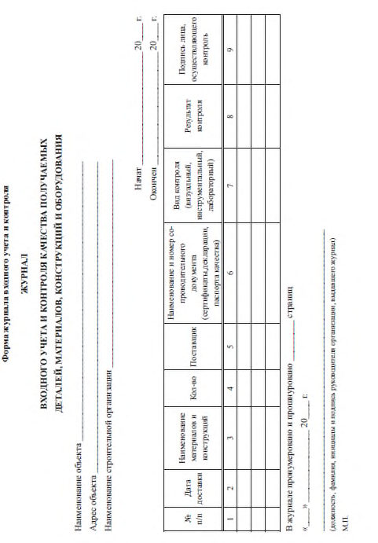

СП 48.13330.2019 «Организация строительства»
Документ входит в доказательную базу технического регламента о безопасности зданий и сооружений (384-ФЗ). Перечень обязательных и добровольных требований определяется актуальными постановлениями Правительства РФ — проверяйте его перед применением. В свод правил могут вноситься изменения: сверяйте редакцию с официальным источником.
О документе: разработчики, утверждение, регистрация, ключевые слова
СВОД ПРАВИЛ
СП 48.13330.2019
Издание официальное
Москва 2019
СП 48.13330.2019
1 ИСПОЛНИТЕЛИ - АО «Научно-исследовательский центр «Строительство» (АО «НИЦ «Строительство»), ФГБОУ ВПО «Национальный исследовательский Московский государственный строительный университет» (ФГБОУ ВПО «НИУ МГСУ»), ООО «Научноисследовательский институт Проектирования, Технологии и Экспертизы Строительства» (ООО «НИИ ПТЭС»), ООО Научнопроектный центр «Развитие города» (ООО НПЦ «Развитие города»)
2 ВНЕСЕН Техническим комитетом по стандартизации ТК 465 «Строительство»
3 ПОДГОТОВЛЕН к утверждению Департаментом градостроительной деятельности и архитектуры Министерства строительства и жилищнокоммунального хозяйства Российской Федерации (Минстрой России)
4 УТВЕРЖДЕН приказом Министерства строительства и жилищнокоммунального хозяйства Российской Федерации от 24 декабря 2019 г. № 861/пр и введен в действие с 25 июня 2020 г.
5 ЗАРЕГИСТРИРОВАН Федеральным агентством по техническому регулированию и метрологии (Росстандарт). Пересмотр СП 48.13330.2011 «СНиП 12-01-2004 Организация строительства»
В случае пересмотра (замены) или отмены настоящего свода правил соответствующее уведомление будет опубликовано в установленном порядке. Соответствующая информация, уведомление и тексты размещаются также в информационной системе общего пользования - на официальном сайте разработчика (Минстрой России) в сети Интернет
© Минстрой России, 2019
Настоящий нормативный документ не может быть полностью или частично воспроизведен, тиражирован и распространен в качестве официального издания на территории Российской Федерации без разрешения Минстроя России
СП 48.13330.2019
Дата введения 2020-06-25
УДК 69:658.012 (083.74) ОКС 91.200.00
Ключевые слова: организация строительства; разрешение на строительство; застройщик; технический заказчик; лицо, осуществляющее строительство; строительный контроль; авторский надзор; государственный строительный надзор; разрешение на ввод в эксплуатацию; строительная лаборатория; планирование; организационно-технологическая документация, перепрофилирование промышленных территорий, производственная программа
Исполнитель
| Заместитель генерального директора по развитию АО «НИЦ «Строительство» | С.Н. Богачев |
|---|---|
| Соисполнители | |
| Заведующий кафедрой «ТОСП» НИУ МГСУ, доктор техн. наук, профессор | А.А. Лапидус |
| Преподаватель кафедры «ТОСП» НИУ МГСУ | А.Ю. Юргайтис |
| Генеральный директор ООО «НИИ ПТЭС», канд. техн. наук | Д.В. Топчий |
| Главный науч. сотр. ООО НПЦ «Развитие города», доктор техн. наук, профессор | Л.В. Киевский |
| Генеральный директор ООО НПЦ «Развитие города», канд. техн. наук | И.Л. Киевский |
| Первый зам. генерального директора ООО НПЦ «Развитие города», канд. техн. наук | С.В. Аргунов |
Введение
Настоящий свод правил разработан в целях обеспечения соблюдения требований Федерального закона от 30 декабря 2009 г. № 384-ФЗ «Технический регламент о безопасности зданий и сооружений». Кроме того, применение настоящего свода правил обеспечивает соблюдение федеральных законов от 27 декабря 2002 г. № 184-ФЗ «О техническом регулировании», от 23 ноября 2009 г. № 261-ФЗ «Об энергосбережении и о повышении энергетической эффективности и о внесении изменений в отдельные законодательные акты Российской Федерации», от 25 октября 2001 г. № 136-ФЗ «Земельный кодекс Российской Федерации», от 28 декабря 2013 г. № 412-ФЗ «Об аккредитации в национальной системе аккредитации», от 25 июня 2002 г. 73-ФЗ «Об объектах культурного наследия (памятниках истории и культуры) народов Российской Федерации», от 5 апреля 2013 г. № 44-ФЗ «О контрактной системе в сфере закупок товаров, работ, услуг для обеспечения государственных и муниципальных нужд», от 30 декабря 2004 г. № 214-ФЗ «Об участии в долевом строительстве многоквартирных домов и иных объектов недвижимости и о внесении изменений в некоторые законодательные акты Российской Федерации», от 21 июля 1997 г. № 116-ФЗ «О промышленной безопасности опасных производственных объектов», от 26 июня 2008 г. № 102-ФЗ «Об обеспечении единства измерений», от 29 декабря 2004 г. 190-ФЗ «Градостроительный кодекс Российской Федерации», от 30 марта 1999 г. № 52-ФЗ «О санитарно-эпидемиологическом благополучии населения».
Пересмотр выполнен авторским коллективом АО «Научноисследовательский центр «Строительство» ( С.Н. Богачев ), ФГБОУ ВПО НИУ МГСУ (д-р техн. наук А.А. Лапидус, А.Ю. Юргайтис ), ООО «Научноисследовательский институт Проектирования, Технологии и Экспертизы Строительства» (канд. техн. наук Д.В. Топчий ), ООО Научно-проектный центр «Развитие города» (д-р техн. наук Л.В. Киевский , канд. техн. наук И.Л. Киевский , канд. техн. наук С.В. Аргунов ).
Organization of construction
1Область применения
2Нормативные ссылки
В настоящем своде правил использованы нормативные ссылки на следующие документы:
ГОСТ 34.10-2018 Информационная технология. Криптографическая защита информации. Процессы формирования и проверки электронной цифровой подписи
ГОСТ 5802-86 Растворы строительные. Методы испытаний
ГОСТ 10180-2012 Бетоны. Методы определения прочности по контрольным образцам
ГОСТ 12004-81 Сталь арматурная. Методы испытания на растяжение
ГОСТ 14019-2003 (ИСО 7438:1985) Материалы металлические. Метод испытания на изгиб
ГОСТ 17624-2012 Бетоны. Ультразвуковой метод определения прочности
ГОСТ 18105-2010 Бетоны. Правила контроля и оценки прочности
ГОСТ 22690-2015 Бетоны. Определение прочности механическими методами неразрушающего контроля
ГОСТ 24846-2012 Грунты. Методы измерения деформаций оснований зданий и сооружений
ГОСТ 27751-2014 Надежность строительных конструкций и оснований. Основные положения
ГОСТ 28570-2019 Бетоны. Методы определения прочности по образцам, отобранным из конструкций
ГОСТ 30062-93 Арматура стержневая для железобетонных конструкций. Вихретоковый метод контроля прочностных характеристик
ГОСТ 31937-2011 Здания и сооружения. Правила обследования и мониторинга технического состояния
ГОСТ 34028-2016 Прокат арматурный для железобетонных конструкций. Технические условия
ГОСТ ISO/IEC 17025-2019 Общие требования к компетентности испытательных и калибровочных лабораторий
ГОСТ Р 7.0.8-2013 Система стандартов по информации, библиотечному и издательскому делу. Делопроизводство и архивное дело. Термины и определения
ГОСТ Р 7.0.97-2016 Система стандартов по информации, библиотечному и издательскому делу. Организационно-распорядительная документация. Требования к оформлению документов
ГОСТ Р 12.3.050-2017 Система стандартов безопасности труда. Строительство. Работы на высоте. Правила безопасности
ГОСТ Р 21.1101-2013 Система проектной документации для строительства. Основные требования к проектной и рабочей документации
ГОСТ Р 51872-2019 Документация исполнительная геодезическая. Правила выполнения
ГОСТ Р 54869-2011 Проектный менеджмент. Требования к управлению проектом
ГОСТ Р 55528-2013 Состав и содержание научно-проектной документации по сохранению объектов культурного наследия. Памятники истории и культуры. Общие требования
ГОСТ Р 57997-2017 Арматурные и закладные изделия сварные, соединения сварные арматуры и закладных изделий железобетонных конструкций. Общие технические условия
СП 17.13330.2017 «СНиП II-26-76 Кровли» (с изменением № 1)
СП 20.13330.2016 «СНиП 2.01.07-85* Нагрузки и воздействия» (с изменениями № 1, № 2)
СП 22.13330.2016 «СНиП 2.02.01-83* Основания зданий и сооружений» (с изменениями № 1, № 2)
СП 34.13330.2012 «СНиП 2.05.02-85* Автомобильные дороги» (с изменениями № 1, № 2)
СП 45.13330.2017 «СНиП 3.02.01-87 Земляные сооружения, основания и фундаменты» (с изменением № 1)
СП 47.13330.2016 «СНиП 11-02-96 Инженерные изыскания для строительства. Основные положения»
СП 51.13330.2011 «СНиП 23-03-2003 Защита от шума» (с изменением № 1)
СП 68.13330.2017 «СНиП 3.01.04-87 Приемка в эксплуатацию законченных строительством объектов. Основные положения»
СП 70.13330.2012 «СНиП 3.03.01-87 Несущие и ограждающие конструкции» (с изменениями № 1, № 3)
СП 71.13330.2017 «СНиП 3.04.01-87 Изоляционные и отделочные покрытия» (с изменением № 1)
СП 72.13330.2016 «СНиП 3.04.03-85 Защита строительных конструкций и сооружений от коррозии» (с изменением № 1)
СП 73.13330.2016 «СНиП 3.05.01-85 Внутренние санитарно-технические системы зданий» (с изменением № 1)
СП 78.13330.2012 «СНиП 3.06.03-85 Автомобильные дороги» (с изменением № 1)
СП 82.13330.2016 «СНиП III-10-75 «Благоустройство территорий» (с изменением № 1)
СП 104.13330.2011 «СНиП 2.06.15-85 Инженерная защита территорий от затопления и подтопления»
СП 126.13330.2017 «СНиП 3.01.03-84 Геодезические работы в строительстве»
СП 246.1325800.2016 Положение об авторском надзоре за строительством зданий и сооружений
СП 255.1325800.2016 Здания и сооружения. Правила эксплуатации. Основные положения (с изменением № 1)
СП 293.1325800.2017 Системы фасадные теплоизоляционные композиционные с наружными штукатурными слоями. Правила проектирования и производства работ
СП 301.1325800.2017 Информационное моделирование в строительстве. Правила организации работ производственно-техническими отделами
СП 325.1325800.2017 Здания и сооружения. Правила производства работ при демонтаже и утилизации
СП 328.1325800.2017 Информационное моделирование в строительстве. Правила описания компонентов информационной модели
СП 333.1325800.2017 Информационное моделирование в строительстве. Правила формирования информационной модели объектов на различных стадиях жизненного цикла
СП 404.1325800.2018 Информационное моделирование в строительстве. Правила разработки планов проектов, реализуемых с применением технологии информационного моделирования
СанПиН 2.1.2.2645-10 Санитарно-эпидемиологические требования к условиям проживания в жилых зданиях и помещениях
Примечание - При пользовании настоящим сводом правил целесообразно проверить действие ссылочных документов в информационной системе общего пользования - на официальном сайте федерального органа исполнительной власти в сфере стандартизации в сети Интернет или по ежегодному информационному указателю «Национальные стандарты», который опубликован по состоянию на 1 января текущего года, и по выпускам ежемесячного информационного указателя «Национальные стандарты» за текущий год. Если заменен ссылочный документ, на который дана недатированная ссылка, то рекомендуется использовать действующую версию этого документа с учетом всех внесенных в данную версию изменений. Если заменен ссылочный документ, на который дана датированная ссылка, то рекомендуется использовать версию этого документа с указанным выше годом утверждения (принятия). Если после утверждения настоящего свода правил в ссылочный документ, на который дана датированная ссылка, внесено изменение, затрагивающее положение, на которое дана ссылка, то это положение рекомендуется применять без учета данного изменения. Если ссылочный документ отменен без замены, то положение, в котором дана ссылка на него, рекомендуется применять в части, не затрагивающей эту ссылку. Сведения о действии сводов правил целесообразно проверить в Федеральном информационном фонде стандартов.
3Термины и определения
В настоящем своде правил применены следующие термины с соответствующими определениями:
- 3.1временная инфраструктура строительной площадки
- Динамическая система, включающая различные объектные элементы - постоянные, мобильные и временные здания и сооружения, средства механизации, инженерные сети и т.д., необходимые для организации строительства (реконструкции, сноса) объекта.
- 3.2годовой план работ
- Документ системы планирования, содержащий взаимоувязанные показатели и мероприятия по реализации объектов годовой производственной программы строительной организации.
- 3.3готовая строительная продукция
- Законченные строительством объекты или их части (результаты строительно-монтажных работ) с соответствующими потребительскими функциями и технико-экономическими показателями согласно проектной документации и техническому заданию застройщика (технического заказчика).
- 3.4градостроительная деятельность
- Деятельность по развитию территорий, в том числе городов и иных поселений, осуществляемая в виде территориального планирования, градостроительного зонирования, планировки территории, архитектурно-строительного проектирования, строительства, капитального ремонта, реконструкции, сноса объектов, эксплуатации зданий, сооружений, благоустройства территорий.Источник: 2, статья 1, часть 1
- 3.5график движения трудовых ресурсов
- один из видов ресурсных графиков, позволяющих моделировать распределение трудовых ресурсов по времени между работами и объектами с возможностью последующей оптимизацией режима пользования установленными методиками.
- 3.6график производства работ
- Инструмент моделирования строительного производства в виде кусочно-постоянных (кусочно-заданных) функций, изображающих на временной шкале последовательность и сроки выполнения работ с максимально возможным их совмещением (линейная диаграмма Гантта).
- 3.7договор строительного (генерального) подряда
- Форма договора, по которому подрядная организация (генеральная подрядная организация) обязуется в установленный договором срок выполнить по заданию застройщика (технического заказчика) определенный комплекс строительно-монтажных работ, а заказчик данных работ обязуется создать подрядной организации необходимые условия для выполнения работ, принять их результат и оплатить обусловленную цену.
- застройщик
- Физическое или юридическое лицо, обеспечивающее на принадлежащем ему земельном участке или на земельном участке иного правообладателя (которому при осуществлении бюджетных инвестиций в объекты капитального строительства государственной (муниципальной) собственности органы государственной власти (государственные органы), Государственная корпорация по атомной энергии «Росатом», Государственная корпорация по космической деятельности «Роскосмос», органы управления государственными внебюджетными фондами или органы местного самоуправления передали в случаях, установленных бюджетным законодательством Российской Федерации, на основании соглашений свои полномочия государственного (муниципального) заказчика или которому передали на основании соглашений свои функции застройщика) строительство, реконструкцию, капитальный ремонт, снос объектов капитального строительства, а также выполнение инженерных изысканий, подготовку проектной документации для их строительства, реконструкции, капитального ремонта. Застройщик вправе передать свои функции, предусмотренные законодательством о градостроительной деятельности, техническому заказчику.Источник: 2, статья 1, часть 16
- 3.9зона действия строительных машин
- Рабочая зона строительных машин в соответствии с техническими характеристиками с учетом технологических параметров работы, схем движения и опасных зон возможного падения груза (и его разлета).
- 3.10зоны с особыми условиями использования территорий
- Охранные, санитарно-защитные зоны, зоны охраны объектов культурного наследия (памятников истории и культуры) народов Российской Федерации (далее объекты культурного наследия), защитные зоны объектов культурного наследия, водоохранные зоны, зоны затопления, подтопления, зоны санитарной охраны источников питьевого и хозяйственно-бытового водоснабжения, зоны охраняемых объектов, приаэродромная территория, иные зоны, устанавливаемые в соответствии с законодательством Российской Федерации.Источник: 2, статья 1, часть 4
- 3.11инженерные изыскания
- Изучение природных условий и факторов техногенного воздействия в целях рационального и безопасного использования территорий и земельных участков в их пределах, подготовки данных по обоснованию материалов, необходимых для территориального планирования, планировки территории и архитектурно-строительного проектирования (подготовки проектной документации).Источник: 2, статья 1, часть 15
- 3.12информационная модель объекта
- Совокупность взаимосвязанных сведений, документов и материалов об объекте капитального строительства или линейном объекте, формируемых в электронном виде на этапах выполнения инженерных изысканий, осуществления архитектурно-строительного проектирования, строительства, реконструкции, капитального ремонта, эксплуатации и (или) сноса объекта капитального строительства.
- 3.13информационное моделирование объектов
- Процесс создания и использования информации по объектам строительства в целях координации входных данных, организации совместного производства и хранения данных, а также их использования для различных целей на всех этапах жизненного цикла.
- 3.14исполнительная документация
- Текстовые и графические материалы, отражающие фактическое исполнение проектных решений, действительное качество, положение, физико-механические свойства объектов капитального строительства, линейных объектов и их элементов в процессе строительства, реконструкции, капитального ремонта, сноса.
- 3.15исходное разрешительная документация
- Комплект исходных данных, необходимый для разработки проектной документации, получение которых регулируют отдельные нормативные акты и положения.
- 3.16календарный план работ
- График производства работ с осуществленной привязкой к действующему производственному календарю.
- 3.17капитальный ремонт линейных объектов
- Изменение параметров линейных объектов или их участков (частей), которое не влечет за собой изменение класса, категории и (или) первоначально установленных показателей функционирования таких объектов и при котором не требуется изменение границ полос отвода и (или) охранных зон таких объектов.Источник: 2, статья 1, часть 14.3
- 3.18капитальный ремонт объектов капитального строительства (за исключением линейных объектов)
- Замена и (или) восстановление строительных конструкций объектов капитального строительства или элементов таких конструкций, за исключением несущих строительных конструкций, замена и (или) восстановление систем инженерно-технического обеспечения и сетей инженерно-технического обеспечения объектов капитального строительства или их элементов, а также замена отдельных элементов несущих строительных конструкций на аналогичные или иные улучшающие показатели таких конструкций элементы и (или) восстановление указанных элементов.Источник: 2, статья 1, часть 14.2
- линейные объекты
- Линии электропередачи, линии связи (в том числе линейно-кабельные сооружения), трубопроводы, автомобильные дороги, железнодорожные линии и другие подобные сооружения.Источник: 2, статья 1, часть10.1
- 3.20лицо, осуществляющее инженерные изыскания
- Индивидуальный предприниматель или юридическое лицо, которые являются членами саморегулируемых организаций в области инженерных изысканий, выполняющие соответствующие виды инженерных изысканий по договору с застройщиком (техническим заказчиком). Проведение данных работ обеспечивается специалистами по организации инженерных изысканий (главными инженерами проектов). Работы по договорам о выполнении инженерных изысканий, заключенным с иными лицами, могут выполняться индивидуальными предпринимателями или юридическими лицами, не являющимися членами таких саморегулируемых организаций.
- 3.21лицо, осуществляющее подготовку проектной документации (проектная организация)
- Физическое лицо, индивидуальный предприниматель или юридическое лицо, выполняющие определенный вид или виды работ по разработке решений в составе проектной или рабочей документации.
- 3.22лицо, осуществляющее строительство, реконструкцию, капитальный ремонт, снос объекта капитального строительства или линейного объекта (далее -лицо, осуществляющее строительство)
- Застройщик либо привлекаемое застройщиком (техническим заказчиком) иное юридическое лицо (или индивидуальный предприниматель) по договору строительного (генерального) подряда.
- 3.23научно-техническое сопровождение; НТС
- Комплекс работ научноаналитического, методического, информационного, экспертно-контрольного и организационного характера, осуществляемых специализированными организациями в процессе изысканий, проектирования и возведения объектов (строительства) для обеспечения качества строительства, надёжности (безопасности, функциональной пригодности и долговечности) зданий и сооружений, с учётом применяемых нестандартных проектных и технических решений, материалов, конструкций и технологий.
- 3.24некапитальные строения, сооружения
- Строения, сооружения, которые не имеют прочной связи с землей и конструктивные характеристики которых позволяют осуществить их перемещение и (или) демонтаж и последующую сборку без несоразмерного ущерба назначению и без изменения основных характеристик строений, сооружений (в том числе киосков, навесов и других подобных строений, сооружений).Источник: 2, статья 1, часть 10.2
- 3.25обеспечение функций
- Совокупность мер, действий и средств, создание условий, способствующих нормальному протеканию процессов, реализации планов, программ, проектов, поддержанию стабильного функционирования объектов, предотвращению сбоев, нарушений законов, нормативных установок, контрактов.
- 3.26объект индивидуального жилищного строительства
- Отдельно стоящее здание с количеством надземных этажей не более чем три, высотой не более двадцати метров, которое состоит из комнат и помещений вспомогательного использования, предназначенных для удовлетворения гражданами бытовых и иных нужд, связанных с их проживанием в таком здании, и не предназначено для раздела на самостоятельные объекты недвижимости. Понятия «объект индивидуального жилищного строительства», «жилой дом» и «индивидуальный жилой дом» применяются в одном значении, если иное не предусмотрено федеральными законами и нормативными правовыми актами Российской Федерации.
- 3.27объект капитального строительства
- Здание, строение, сооружение, объекты, строительство которых не завершено, за исключением некапитальных строений, сооружений и неотделимых улучшений земельного участка (замощение, покрытие и другие).Источник: 2, статья 1, часть 10
- 3.28объект
- Совокупный термин, объединяющий объекты капитального строительства, реконструируемые объекты, объекты, подлежащие капитальному ремонту, объекты, подлежащие сносу (в том числе линейные объекты, объекты проектов благоустройства, объекты проектов инженерной подготовки территории, объекты проектов перепрофилирования промышленных территорий в условиях сложившейся застройки).
- 3.29опасная производственная зона строительной площадки
- Зона возможного воздействия на работающего, при его нахождении в ней, опасных производственных факторов и/или вредных производственных факторов, риск воздействия или экспозиция которых могут превысить предельно допустимые значения (монтажная зона строительного объекта, опасная зона дорог и т.д.).
- 3.30организационно-распорядительная документация
- Комплекс документов, закрепляющих функции, задачи, цели, а также права и обязанности работников и руководителей по выполнению конкретных действий, необходимость которых возникает в операционной деятельности организации.
- 3.31организационно-технологическая документация
- Документация, содержащая организационно-технологические решения, расчеты, мероприятия и требования по выполнению соответствующих видов строительно-монтажных работ, разрабатываемая с целью обеспечения технологически эффективного, экономически оптимизированного и безопасного производства соответствующих видов работ.
- 3.32перепрофилирование промышленных территорий в условиях сложившейся застройки
- Комплекс организационно-технологических мероприятий по освоению существующих промышленных территорий, целью которого является достижение баланса социальной, экономической, экологической и институциональной составляющих развития данных территорий.
- 3.33проект организации строительства; ПОС
- Раздел проектной документации, определяющий общую продолжительность и промежуточные сроки строительства, распределение капитальных вложений и объемов строительно-монтажных работ, материально-технические и трудовые ресурсы и источники их покрытия, основные методы выполнения строительно-монтажных работ, структуру управления строительством объекта и другие сведения в соответствии с требованиями действующего законодательства.
- 3.34проект производства работ; ППР
- Один из основных организационнотехнологических документов, описывающих применяемые обоснованные организационно-технологические решения для обеспечения оптимальной технологичности производства и безопасности соответствующих видов работ, а также экономической эффективности капитальных вложений. Примечание - ППР устанавливает порядок инженерного оборудования и обустройства строительной площадки, обеспечивает моделирование строительного процесса, прогнозирование возможных рисков, определяет оптимальные сроки строительства. Выбор организационно-технологических решений следует осуществлять на основе вариантной проработки с применением методов критериальной оценки.
- 3.35проектная документация
- Документация, разрабатываемая на первой стадии при двухстадийном архитектурно-строительном проектировании, являющаяся объектом интеллектуальной собственности и содержащая материалы в текстовой и графической формах и (или) в форме информационной модели и определяющая архитектурные, функционально-технологические, конструктивные, технико-экономические и инженерно-технические решения для обеспечения строительства, реконструкции, сноса объектов капитального строительства, их частей, капитального ремонта (в том числе для линейных объектов). Примечание - Проектная документация состоит из технической документации и сметной документации (сметных расчетов) (при необходимости). Каждый проектный документ, как составная часть проектной документации имеет самостоятельное наименование и обозначение. Состав проектной документации необходим для оценки соответствия принятых решений заданию на проектирование, требованиям технических регламентов и документов в области стандартизации, а также достаточен для разработки рабочей документации для строительства.
- 3.36производственная программа строительной организации
- Основной элемент системы годового (текущего) планирования в строительной организации, содержащий план работ по объектам программы и адаптированный для оптимизации установленными методиками.
- 3.37производственно-технический отдел; ПТО
- Подразделение юридического лица, выполняющего строительные работы, обеспечивающее планирование и управление процессом строительства.Источник: СП 301.1325800.2017, пункт 3.8
- 3.38работы общестроительные
- Массовые виды строительных работ, связанные с непосредственным возведением зданий и сооружений (земляные, бетонные, каменные работы, монтаж сборных несущих и ограждающих конструкций, отделочные, кровельные и гидроизоляционные работы, устройство полов, столярные и стекольные работы и т.д.
- 3.39работы специальные строительные
- Отдельные виды работ при строительстве, реконструкции, капитальном ремонте, сносе объектов, связанные с устройством, переносом или заменой инженерных сетей, систем, монтажом инженерного оборудования.
- 3.40рабочая документация
- Документация, разрабатываемая на второй стадии при двухстадийном проектировании в целях реализации в процессе строительства архитектурных, технических и функционально-технологических решений, содержащихся в проектной документации и состоящая из документов в текстовой форме, рабочих чертежей с детальной проработкой узлов, спецификаций оборудования, изделий и материалов, необходимых для производства строительно-монтажных работ, обеспечения строительства оборудованием, изделиями и материалами и (или) изготовления строительных изделий.
- 3.41реконструкция линейных объектов
- Изменение параметров линейных объектов или их участков (частей), которое влечет за собой изменение класса, категории и (или) первоначально установленных показателей функционирования таких объектов (мощности, грузоподъемности и других) или при котором требуется изменение границ полос отвода и (или) охранных зон таких объектов.Источник: 2, статья 1, часть 14.1
- 3.42реконструкция объектов капитального строительства (за исключением линейных объектов)
- Изменение параметров объекта капитального строительства, его частей (высоты, количества этажей, площади, объема), в том числе надстройка, перестройка, расширение объекта капитального строительства, а также замена и (или) восстановление несущих строительных конструкций объекта капитального строительства, за исключением замены отдельных элементов таких конструкций на аналогичные или иные улучшающие показатели таких конструкций элементы и (или) восстановления указанных элементов.Источник: 2, статья 1, часть 14
- 3.43сетевая модель
- Инструмент моделирования строительного производства, базирующийся на математической теории графов, с возможностью расчета временных параметров установленными методиками.
- 3.44сетевой график
- Сетевая модель с детерминированными временными параметрами.
- 3.45скрытые работы
- Работы, результаты которых оказывают влияние на безопасность объекта и в соответствии с технологией строительства, реконструкции, капитального ремонта и контроль за выполнением которых не может быть проведен после выполнения последующих работ.
- 3.46сметная стоимость строительства
- Сумма денежных средств, необходимых для реализации проекта, рассчитанная установленным методом и представленная в сводном сметном расчете.
- 3.47снос объекта капитального строительства
- Ликвидация объекта капитального строительства путем его разрушения (за исключением разрушения вследствие природных явлений либо противоправных действий третьих лиц), разборки и (или) демонтажа объекта капитального строительства, в том числе его частей.Источник: 2, статья 1, часть 14.4
- 3.48специалист по организации инженерных изысканий, специалист по организации архитектурно-строительного проектирования, специалист по организации строительства
- физическое лицо, которое имеет право осуществлять по трудовому договору, заключенному с индивидуальным предпринимателем или юридическим лицом, трудовые функции по организации выполнения работ по инженерным изысканиям, подготовке проектной документации, строительству, реконструкции, капитальному ремонту, сносу объекта капитального строительства в должности главного инженера проекта, главного архитектора проекта и сведения о котором включены в национальный реестр специалистов в области инженерных изысканий и архитектурностроительного проектирования или в национальный реестр специалистов в области строительства.Источник: 2, статья 55.5-1, часть 1
- 3.49статус постоянного присутствия ответственного лица на объекте
- Нахождение ответственного лица на строительной площадке в соответствии с графиком (и сменностью) выполнения строительно-монтажных работ на объекте или в соответствии с иными принципами, согласованными участниками строительства.
- 3.50строительная площадка
- Участок земли или воды, отведенный в соответствии с проектной документацией для постоянного размещения объекта и временной инфраструктуры, на котором ведутся строительно-монтажные работы или освоение территории.
- 3.51строительно-монтажные работы
- Совокупный термин, объединяющий общестроительные и (или) специальные строительные виды работ, выполняемые по договору строительного (генерального) подряда.
- 3.52строительство
- Создание зданий, строений, сооружений (в том числе на месте сносимых объектов капитального строительства).Источник: 2, статья 1, часть 13
- 3.53технический заказчик
- Юридическое лицо, которое уполномочено застройщиком и от имени застройщика заключает договоры о выполнении инженерных изысканий, о подготовке проектной документации, о строительстве, реконструкции, капитальном ремонте, сносе объектов капитального строительства, подготавливает задания на выполнение указанных видов работ, предоставляет лицам, выполняющим инженерные изыскания и (или) осуществляющим подготовку проектной документации, строительство, реконструкцию, капитальный ремонт, снос объектов капитального строительства, материалы и документы, необходимые для выполнения указанных видов работ, утверждает проектную документацию, подписывает документы, необходимые для получения разрешения на ввод объекта капитального строительства в эксплуатацию, осуществляет иные функции, предусмотренные законодательством о градостроительной деятельности. Функции технического заказчика могут выполняться только членом соответственно саморегулируемой организации в области инженерных изысканий, архитектурно-строительного проектирования, строительства, реконструкции, капитального ремонта, сноса объектов капитального строительства, за исключением случаев, предусмотренных частью 2.1 статьи 47, частью 4.1 статьи 48, частями 2.1 и 2.2 статьи 52, частями 5 и 6 статьи 55.31 настоящего Кодекса.Источник: 2, статья 1, часть 22
- 3.54участники строительства
- Совокупный термин, объединяющий участников строительного проекта -физические лица, индивидуальные предприниматели, юридические лица (застройщик, технический заказчик, генеральная подрядная организация, подрядные организации, эксплуатирующие организации, органы государственного строительного надзора, проектные организации и т.д.).
- 3.55фронт работ
- Часть строящегося объекта, необходимая для размещения определенного числа рабочих со средствами труда, последующего выполнения строительно-монтажных работ на выделенном объеме в соответствии с заданной технологией и определяемая по расчетам в организационно-технологической документации (делянки, захватки, ярусы).
- 3.56эксплуатирующая организация
- Юридическое или физическое лицо, осуществляющее на правах собственности или на ином законном основании техническую эксплуатацию объекта.
- 3.57электронная подпись
- Реквизит электронного документа, полученный в результате криптографического преобразования информации с использованием закрытого ключа подписи и позволяющий проверить отсутствие искажения информации в электронном документе с момента формирования подписи, принадлежность подписи владельцу сертификата ключа подписи, а в случае успешной проверки - подтвердить факт подписания электронного документа.Источник: СП 301.1325800.2017, пункт 3.11
4Общие положения
- формирование исходно-разрешительной документации для проектирования, проведение инженерных изысканий, формирование технического задания на проектирование;
- проектная подготовка - разработка проектной документации, утверждение проектной документации, результатов инженерных изысканий и подтверждение достоверности сметной стоимости;
- строительное производство, включая инженерную подготовку территории строительной площадки;
- приемка законченного строительством объекта в эксплуатацию.
СП 48.13330.2019 должны обеспечивать соответствие завершенных строительством объектов утвержденной проектной документации, ограничениям и требованиям, установленным разрешенным использованием земельного участка (градостроительного плана земельного участка), требованиям технических регламентов и при этом обеспечивать безопасность для третьих лиц и окружающей среды, выполнение требований безопасности труда, сохранности объектов культурного наследия.
- получение разрешения на строительство, своевременное внесение изменений в разрешение на строительство в соответствии с [2];
- получение права ограниченного пользования соседними земельными участками (сервитутов) на время строительства;
- привлечение подрядной организации (генеральной подрядной организации) для выполнения работ по строительству здания или сооружения в качестве лица, осуществляющего строительство, в случае выполнения работ по договору;
- организация и проведение закупочных процедур по определению подрядных организаций (генеральных подрядных организаций), если процедуры требуются по условиям инвестиций или правообладания земельным участком размещения объекта [2], [7];
- предоставление заверенной в установленном порядке по ГОСТ Р 7.0.8, ГОСТ Р 7.0.97 копии организационно-распорядительного документа о назначении персонально ответственных за строительство должностных лиц (ответственного представителя застройщика (технического заказчика)), в том числе ответственного представителя строительного контроля застройщика, в течение трех дней после заключения контракта с подрядной организацией (генеральной подрядной организацией);
- обеспечение строительства проектной документацией и результатами инженерных изысканий, утвержденных в установленном порядке согласно [2], [12], [19], [20];
- обеспечение работ комплектами рабочей документацией, единовременное или поэтапное, соответствующей утвержденной проектной документации и допущенной (принятой) к производству работ путем простановки штампа;
- передача подрядной организации (генеральной подрядной организации) копии разрешения на строительство (реконструкцию), копии разрешений на временное присоединение объекта к сетям инженерно-технического обеспечения в соответствии с утвержденной проектной (ПОС) и разрешительной документацией;
- организация регламентированного согласования ППР и строительных генеральных планов с заинтересованными службами, балансодержателями (собственниками) и иными структурами в соответствии с порядком, предусмотренным руководящими документами;
- организация получения разрешений соответствующих эксплуатирующих организаций на производство работ в границах отвода территорий предприятий, придорожных полосах, охранных и иных зонах, на действия с зелеными насаждениями;
- подготовка (в том числе расчистка территории, организация вырубки зеленых насаждений, сноса строений и переноса сетей инженерно-технического обеспечения) и передача строительной площадки подрядной (генеральной подрядной) организации совместно с точками подключения к сетям инженернотехнического обеспечения (предусмотренным ПОС) по акту;
- обеспечение выноса в натуру линий регулирования застройки и создание геодезической разбивочной основы в соответствии с положениями СП 126.13330;
- привлечение для авторского надзора за строительством объекта лица, осуществившего подготовку проектной документации, либо иного лица, обладающего соответствующими квалификационными требованиями в области подготовки проектной документации [2];
- извещение о начале (возобновлении) строительства, реконструкции органа государственного строительного надзора, которому поднадзорен конкретный объект;
- проведение строительного контроля застройщика (технического заказчика);
- обеспечение выборочной контрольно-геодезической съемки элементов зданий, сооружений, инженерных коммуникаций;
- согласование программ инженерных изысканий, научно- технического сопровождения, геотехнического мониторинга (предусмотренных проектной документацией или при выявлении соответствующей необходимости выполнения таких работ в процессе строительства) в соответствии с ГОСТ 27751, СП 22.13330.
- обеспечение геотехнического мониторинга объекта и окружающей застройки в соответствии с СП 22.13330;
- организация научно-технического сопровождения изысканий и проектирования для зданий и сооружений класса КС-3 по ГОСТ 27751;
- организация научно-технического сопровождения строительства для зданий и сооружений класса КС-3 по ГОСТ 27751, имеющих повышенный уровень ответственности, для объектов при экспериментальном (опытном) строительстве, освоении инновационных технологий, при строительстве в районах развития опасных геологических и инженерно-геологических процессов, распространения специфических грунтов, многолетнемерзлых грунтов и в иных случаях, предусмотренных утвержденной проектной документацией;
- организация археологических наблюдений в случае, если это предусмотрено утвержденной проектной документацией [26];
- обеспечение выполнения работ по строительству, реконструкции, капитальному ремонту в соответствии с заданием на проектирование, проектной документацией и (или) информационной моделью (в случае, если формирование и ведение информационной модели являются обязательными в соответствии с требованиями [2], СП 301.1325800, СП 404.1325800, СП 328.1325800, СП 333.1325800, разрешением на строительство, требованиями технических
СП 48.13330.2019 регламентов и условиями договоров на технологическое присоединение к сетям инженерного обеспечения;
- организация выполнения работ по строительству, реконструкции, капитальному ремонту специалистом по организации строительства, внесенным в национальный реестр специалистов в области строительства, и обеспечение его постоянного присутствия на строительной площадке;
- организация соответствующих мероприятий в случае обнаружения археологического объекта или признаков такого объекта в процессе строительства [8];
- обеспечение доступа на строительную площадку представителей органов государственного надзора, организация устранения выявленных недостатков с возможной приостановкой строительно-монтажных работ до их устранения, составления актов об устранении недостатков, информирование надзорных органов о сроках завершения работ, которые подлежат проверке (в случае, если объект подлежит государственному строительному и (или) экологическому надзору) [2];
- извещение органов государственного строительного надзора о каждом случае возникновения аварийных ситуаций на объекте;
- размещение информации в единой информационной системе жилищного строительства (ЕИСЖС) при долевом строительстве и предоставление отчетности об осуществлении деятельности в контролирующий орган [6];
- организация заказа, изготовления, поставки, приемки, хранения и передачу подрядчику для монтажа инженерного и технологического оборудования строящегося объекта;
- организация наладки и апробирования инженерного и технологического оборудования, пробного производства продукции и других мероприятий по подготовке объекта капитального строительства к эксплуатации;
- принятие решений о начале, приостановке, консервации (при необходимости прекратить работы или при их временной приостановке на срок более шести месяцев), прекращении строительства, о вводе законченного строительством объекта в эксплуатацию;
- приемка законченного строительством объекта в случае выполнения работ по договору;
- предъявление законченного строительством объекта органам государственного строительного надзора и экологического надзора (в случаях и порядке, предусмотренных [2]);
- организация подготовки и оформления документов, для заявления о выдаче разрешения на ввод объекта в эксплуатацию (если такое разрешение требуется), направление заявления о выдаче разрешения на ввод объекта в эксплуатацию, предъявление законченного объекта органам государственного строительного надзора и экологического надзора и получение разрешения (в случаях, предусмотренных [2]);
- предъявление законченного строительством объекта уполномоченному органу для ввода в эксплуатацию;
- комплектование, учет, хранение и передача соответствующим организациям исполнительной документации по ГОСТ Р 21.1101, ГОСТ Р 7.0.8, в том числе общих журналов работ с их регистрацией в органах государственного строительного надзора.
- выполнение всех необходимых работ в соответствии с утвержденной проектной (ПОС), рабочей документацией и заключенным договором с застройщиком (техническим заказчиком);
- обеспечение выполнения работ по строительству, реконструкции, капитальному ремонту объекта капитального строительства специалистом по организации строительства, внесенным в национальный реестр специалистов, и обеспечение его постоянного присутствия на строительной площадке;
- разработка и применение организационно-технологической документации, в том числе организационно-технологической документации по эксплуатации подъемных сооружений при проведении погрузочно-разгрузочных строительномонтажных работ [30]
- осуществление строительного контроля лицом, осуществляющим строительство, в том числе контроля за соответствием применяемых строительных материалов, технологий, конструкций, оборудования, полуфабрикатов и изделий требованиям технических регламентов, проектной (ПОС) и рабочей документации;
- организация строительного производства, планирование, в том числе планирование работ производственной программы с увязкой объектов и оптимизацией этой программы по критерию рационального пользования трудовых ресурсов установленными методиками;
- ведение, комплектация и передача застройщику (техническому заказчику) исполнительной документации по объекту в установленном виде и формах согласно действующим нормативным документам (НД);
- обеспечение безопасности труда (в том числе ограждение строительной площадки до начала любых работ и опасных зон работ за ее пределами в соответствии с требованиями НД, установка информационных щитов и стенда пожарной защиты) на строительной площадке, безопасности строительных работ для окружающей среды и населения;
- организация строительного производства, в том числе обеспечение охраны строительной площадки и сохранности объекта до его приемки застройщиком (техническим заказчиком);
- организация строительного производства на объекте, в том числе планирование, контроль, оценка и управление рисками при координации работ подрядных организаций, посредством проектного управления согласно ГОСТ Р 54869 (при необходимости);
- выполнение требований местной администрации, действующей в пределах ее компетенции, по поддержанию порядка на прилегающей к стройплощадке территории;
- предоставление застройщику (техническому заказчику) надлежаще заверенных копий приказов о назначении [28]:
- руководителя строительства (главного инженера проекта), являющегося специалистом по организации строительства, включенным в национальный реестр специалистов (с указанием идентификационного номера в реестре);
- ответственного лица по вопросам охраны труда и техники безопасности (в том числе ответственного лица за соблюдение требований электробезопасности) на объекте;
- представителя лица, осуществляющего строительство, по вопросам строительного контроля (специалиста по организации строительства) включенным в национальный реестр специалистов (с указанием идентификационного номера в реестре);
- ответственного за пожарную безопасность;
- ответственного за производство работ грузоподъемными механизмами;
- ответственного за геодезические работы;
- ответственного лица за выдачу наряд-допусков на объекте;
- исполнение иных функций, возложенные условиями договора (контракта) с застройщиком (техническим заказчиком).
- подготовка проектной документации;
- сопровождение процессов утверждения проектной документации, устранение замечаний по разработанной документации;
- подготовка комплектов рабочей документации в случае соответствующих обязательств по договору с застройщиком (техническим заказчиком);
- внесение, в установленном порядке, изменений в проектную и рабочую документацию в процессе строительства в случае изменения, после начала строительства, градостроительного плана земельного участка, документации по
СП 48.13330.2019 планировке территории или действующих НД, необходимости учета технологических возможностей подрядной организации (генеральной подрядной организации) (в случае соответствующих обязательств по договору с застройщиком (техническим заказчиком));
- принятие решений о возможности применения материалов и оборудования, отличных от утвержденных (в случае соответствующих обязательств по договору с застройщиком (техническим заказчиком));
- сопровождение откорректированной проектной документации при ее последующем согласовании, устранение замечаний по разработанной документации (в случае соответствующих обязательств по договору с застройщиком (техническим заказчиком));
- разработка дополнительных проектных решений в связи с необходимостью обеспечения производства;
- ведение авторского надзора по договору с застройщиком (техническим заказчиком), в том числе в случаях, предусмотренных [2], СП 246.1325800;
- иные функции, возложенные условиями договора (контракта) с застройщиком (техническим заказчиком).
5Проектная подготовка строительства
- застройщик (технический заказчик) - ответственного представителя застройщика (технического заказчика) по вопросам строительного контроля (с указанием идентификационного номера в национальном реестре специалистов в области строительства);
- лицо, осуществляющее строительство (подрядная организация, генеральная подрядная организация) - представителя лица, осуществляющего строительство, по вопросам строительного контроля (с указанием идентификационного номера в национальном реестре специалистов в области строительства);
- лицо, осуществляющее строительство (подрядная организация, генеральная подрядная организация), - ответственного производителя работ (с указанием идентификационного номера в национальном реестре специалистов в области строительства);
- лицо, осуществившее подготовку проектной документации (проектная организация), - ответственного представителя авторского надзора в случаях, когда авторский надзор выполняется в соответствии с настоящим сводом правил (с указанием идентификационного номера в национальном реестре специалистов в области архитектурно-строительного проектирования).
Работы по договорам на строительство, реконструкцию, капитальный ремонт объектов, заключенным с иными лицами, могут выполняться индивидуальными предпринимателями или юридическими лицами, не являющимися членами таких саморегулируемых организаций [2].
- ее комплектность;
- корректность оформления, состав и содержание в соответствии с [18];
- наличие согласований и утверждений;
- достаточность информации для выполнения строительно-монтажных работ;
- наличие ссылок на действующие НД, в том числе на материалы и изделия;
- наличие требований к фактической точности контролируемых параметров;
- наличие указаний о методах контроля и измерений, в том числе в виде ссылок на соответствующие действующие НД.
- заключает с застройщиком (техническим заказчиком) договор строительного подряда на строительство;
- получает от застройщика (технического заказчика) копию разрешения на строительство;
- получает от застройщика (технического заказчика) проектную, в части организационно-технологических решений ПОС, и рабочую документацию, утвержденную в производство работ (в полном объеме или поэтапно в соответствии с утвержденным графиком выдачи комплектов рабочей документации);
- принимает площадку для строительства по акту;
- согласовывает состав подрядных организаций с застройщиком (техническим заказчиком), заключает с ними договоры на выполнение различных видов работ и координирует их деятельность (если это допускается условиями договора с застройщиком (техническим заказчиком));
- заключает договоры на поставку материально-технических ресурсов;
- заключает договоры с аккредитованными лабораториями на выполнение видов испытаний, которые не могут быть выполнены в собственных лабораториях;
- составляет акт-допуск о возможном совмещении производства работ при реконструкции объекта действующего предприятия;
- разрабатывает организационно-технологическую документацию;
- обеспечивает инженерную подготовку территории строительной площадки.
- проект организации строительства;
- проект организации работ по сносу или демонтажу объектов капитального строительства.
6Организационно-технологическая документация
- проекты производства работ (ППР);
- проекты организации работ (ПОР);
- технологические схемы и указания по производству работ;
- схемы контроля качества (контрольные карты, чек-листы);
- поточные графики, циклограммы;
- технологические регламенты;
- технологические карты;
- карты трудовых процессов;
- сетевые модели и графики;
- ресурсные графики (графики движения, поставок);
- иные документы, в которых содержатся решения по организации строительного производства и технологии строительно-монтажных работ, оформленные, согласованные, утвержденные и зарегистрированные в соответствии с правилами, действующими в организациях, разрабатывающих, утверждающих и согласующих эти документы.
- любом виде строительной деятельности на городской территории;
- любом строительстве на территории действующего предприятия;
- строительстве в сложных природных и геологических условиях (сложность определяется в проектной документации и результатах изысканий), а также при строительстве уникальных, особо опасных и технически сложных объектов.
- титульный лист;
- лист ознакомления ответственного персонала с положениями ППР;
- календарный план или график производства работ по объекту;
- строительный генеральный план, оформленный согласно ГОСТ Р 21.1101 и включающий указание типа и конструкции ограждения строительной площадки; схему размещения бытовых помещений строителей и мобильных (инвентарных) зданий с экспликацией; схемы организации дорожного движения с указанием типов и конструкций внутриплощадочных дорог; трассировку инженерных сетей снабжения, канализации, пожаротушения и освещения; схему размещения складских площадей и помещений; схемы привязки основных средств механизации; указание опасных производственных зон и зон влияния строительных машин;
- график поступления на объект строительных конструкций, изделий, материалов и оборудования;
- график движения трудовых ресурсов по объекту;
- график движения основных строительных машин по объекту;
- технологические карты на выполнение видов работ;
- схемы размещения геодезических знаков;
- требования к качеству выпускаемой продукции, методы и средства контроля;
- схемы монтажа и демонтажа кранового оборудования, грузовых и грузопассажирских подъемников, в том числе решения конструкций, оснований и креплений;
- список титульных и нетитульных временных зданий и сооружений на территории строительной площадки (приложение К);
- пояснительную записку, содержащую: решения по производству геодезических работ, решения по прокладке временных сетей водо-, тепло-, энергоснабжения и освещения строительной площадки и рабочих мест; обоснования и мероприятия по применению мобильных форм организации работ, режимы труда и отдыха; решения по производству работ, включая работы в особых природно-климатических условиях (например, в зимнее время); потребность в энергоресурсах; потребность и привязку городков строителей и мобильных (инвентарных) зданий; калькуляцию трудозатрат; мероприятия по обеспечению сохранности материалов, изделий, конструкций и оборудования на строительной площадке; требования по безопасной эксплуатации подъемных механизмов и сооружений при проведении погрузочно-разгрузочных,
СП 48.13330.2019 строительно-монтажных работ с учетом требований законодательства и НД в области промышленной безопасности; природоохранные мероприятия; мероприятия по обеспечению пожарной безопасности; мероприятия по охране труда и безопасности в строительстве; технико-экономические показатели (трудоемкость, продолжительность, удельные показатели).
- титульный лист;
- лист ознакомления ответственного персонала с положениями ППР;
- календарный план или график производства работ по объекту;
- строительный генеральный план оформленный согласно ГОСТ Р 21.1101 и включающий: указание типа и конструкции ограждения строительной площадки; схему размещения бытовых помещений строителей и мобильных (инвентарных) зданий с экспликацией; схемы организации дорожного движения с указанием типов и конструкций внутриплощадочных дорог; трассировку инженерных сетей снабжения, канализации, пожаротушения и освещения; схему размещения складских площадей и помещений; схемы привязки основных средств механизации; указание опасных производственных зон и зон влияния строительных машин;
- технологические карты на выполнение отдельных видов работ (по согласованию с техническим заказчиком);
- схемы размещения геодезических знаков;
- пояснительную записку, содержащую: основные решения, природоохранные мероприятия; мероприятия по обеспечению пожарной безопасности; мероприятия по охране труда и безопасности в строительстве.
- задание на разработку, выдаваемое строительной организацией как заказчиком проекта производства работ, с обоснованием необходимости разработки его на здание (сооружение) в целом, его часть или вид работ и с указанием сроков разработки;
- проект организации строительства;
- необходимая рабочая документация (в том числе, рабочая документация на специальные вспомогательные сооружения и устройства (СВСиУ). Перечень СВСиУ приведен в приложении Л;
- условия поставки конструкций, готовых изделий, материалов и оборудования, использования строительных машин и транспортных средств, обеспечения рабочими кадрами строителей по основным профессиям, применения бригадного подряда на выполнение работ, производственнотехнологической комплектации и перевозки строительных грузов, а в необходимых случаях также условия организации строительства и выполнения работ вахтовым методом;
- материалы и результаты технического обследования действующих предприятий, зданий и сооружений при их реконструкции, а также требования к выполнению строительных, монтажных и специальных строительных работ в условиях действующего производства;
- решения проектов производства работ должны обеспечивать достижение механической и производственной безопасности объектов капитального строительства.
7Инженерная подготовка строительной площадки
СП 48.13330.2019 геодезических разбивочных работ, правила нанесения и закрепления монтажных ориентиров.
- объемы, технологическую последовательность, сроки выполнения строительно-монтажных работ и условия их совмещения с работой производственных цехов и участков реконструируемого предприятия;
- порядок оперативного руководства, включая действия строительных и эксплуатирующих организаций, при возникновении аварийных ситуаций;
- последовательность разборки конструкций, а также разборки или переноса (выноса) инженерных сетей, места и условия подключения временных сетей водоснабжения, электроснабжения и др., места выполнения исполнительных съемок;
- порядок восстановления дорожного покрытия после завершения работ, связанных с необходимостью его вскрытия;
- порядок использования строителями услуг предприятия и его технических средств;
- условия организации комплектной и первоочередной поставки оборудования и материалов, перевозок, складирования грузов и передвижения строительной техники по территории предприятия, а также размещения временных зданий и сооружений и (или) использования для нужд строительства зданий, сооружений и помещений действующего производственного предприятия.
- минимизацию объемов временного строительства за счет максимального использования постоянных зданий, дорог и сетей инженерно-технического обеспечения;
- максимальное использование мобильных (инвентарных) зданий и сооружений (некапитальных) для создания нормальных производственных и бытовых условий для работающих;
- максимально возможную прокладку всех видов временных сетей инженерно-технического обеспечения по постоянным трассам;
- оптимизацию схем доставки материально-технических ресурсов с минимальным объемом перегрузочных работ.
- оптимизацию земляных работ в части размещения разработанного грунта, пригодного для обратной засыпки траншей и котлованов, и вертикальной планировки, на территории строительной площадки по согласованию с застройщиком (техническим заказчиком).
- наименования объекта, сроков начала и окончания работ, схемы объекта;
- наименования застройщика (технического заказчика);
- представителя застройщика (технического заказчика) - должностного лица, отвечающего за ведение строительного контроля;
- исполнителя работ (подрядной организации, генеральной подрядной организации) - инициалы, фамилия, должность, номер в национальном реестре специалистов и номера телефонов лица, ответственного за организацию работ по строительству, реконструкции, капитального ремонта, сносу объекта;
- представителя органа государственного строительного надзора или местного самоуправления, курирующего строительство;
- ответственного представителя проектной организации - должностное лицо, отвечающее за ведение авторского надзора, в случаях, когда он выполняется.
- сдачу-приемку геодезической разбивочной основы для строительства;
- освобождение строительной площадки для производства строительномонтажных работ (расчистка территории, снос зданий и сооружений, и др.);
- планировку территории;
- устройство временных сетей инженерно-технического обеспечения, предусмотренных ПОС;
- устройство постоянных и временных дорог;
- устройство инвентарных временных ограждений строительной площадки с организацией, в необходимых случаях, контрольно-пропускного режима;
- размещение мобильных (инвентарных) зданий и сооружений;
- устройство складских площадок, площадок временного размещения грунта;
- организацию связи для оперативно-диспетчерского управления производством работ;
- обеспечение строительной площадки противопожарным водоснабжением и инвентарем, освещением и средствами сигнализации.
СП 48.13330.2019
8Производство строительно-монтажных работ
8.1Основные положения по производству строительно-монтажных работ
8.2Исполнительная документация
- акты освидетельствования геодезической разбивочной основы объекта капитального строительства;
- акты разбивки осей объекта капитального строительства на местности;
- акты освидетельствования скрытых работ (приложение Д);
- акты освидетельствования ответственных конструкций (приложение Г);
- акты освидетельствования участков сетей инженерно-технического обеспечения (приложение Е);
- комплект рабочих чертежей с надписями о соответствии выполненных в натуре работ этим чертежам или о внесенных в них по согласованию с проектной организацией изменениях, сделанных лицами, ответственными за производство строительно-монтажных работ;
- исполнительные геодезические схемы и чертежи;
- исполнительные схемы и профили участков сетей инженернотехнического обеспечения;
- акты испытания и опробования технических устройств;
- результаты экспертиз, обследований, лабораторных и иных испытаний выполненных работ, проведенных в процессе строительного контроля;
- документы, подтверждающие проведение контроля качества применяемых строительных материалов (изделий);
- иные документы, отражающие фактическое исполнение проектных решений.
Примерный перечень исполнительной документации приведен в приложении Б.
8.3Порядок освидетельствования скрытых работ
(технического заказчика) и представителей авторского надзора о сроках выполнения соответствующей процедуры оценки соответствия в виде оформления актов освидетельствования скрытых работ.
8.4Работы в местах расположения действующих подземных коммуникаций
8.5Снос объектов капитального строительства
8.6Прекращение строительства и консервация объекта
- перечень работ по консервации объекта, сформированный с учетом требований [17];
- лица, ответственные за сохранность и безопасность объекта, в том числе конструкций, оборудования, материалов и строительной площадки (должностное лицо или организация);
- сроки разработки технической документации, необходимой для проведения работ по консервации объекта (далее - техническая документация), а также сроки проведения работ по его консервации;
- размер средств на проведение работ по консервации объекта, определяемый на основании акта, подготовленного лицом, осуществляющим строительство (реконструкцию) объекта (далее - подрядная организация), и утвержденного застройщиком (техническим заказчиком).
- выполняются схемы и чертежи с описанием состояния объекта и указанием объемов выполненных работ;
- составляются ведомости, в которых указываются сведения:
- о конструкциях, оборудовании и материалах, примененных (смонтированных) на объекте, в том числе о конструкциях, оборудовании и материалах, не использованных на объекте и подлежащих хранению;
- о наличии сметной документации;
- о наличии исполнительной документации (включая журналы проведения работ, в том числе общий журнал работ), актов освидетельствования скрытых работ, актов проведенных испытаний, опробований и иных первичных документов.
- установка (монтаж) дополнительных конструкций, принимающих проектные нагрузки (в том числе временные);
- монтаж оборудования, применяемого для закрепления и вывешивания неустойчивых конструкций и элементов, или демонтаж таких конструкций и элементов;
- освобождение емкостей и трубопроводов от опасных и горючих жидкостей, закрытие или сварка люков и крупных отверстий;
- приведение технологического оборудования в безопасное состояние;
- отключение инженерных коммуникаций, в том числе временных (за исключением тех, которые необходимы для обеспечения сохранности объекта);
- принятие необходимых мер, препятствующих несанкционированному доступу внутрь объекта и на территорию строительной площадки;
- проведение консервации оборудования, обеспечивающей его сохранность на период до возобновления строительства.
СП 48.13330.2019
- техническое обследование объекта, по результатам которого определяются необходимый объем и стоимость работ по восстановлению утраченных или разрушенных за период консервации конструктивных элементов или деталей объекта;
- внесение (при необходимости) изменений в ранее подготовленную проектную документацию с последующим проведением государственной экспертизы и государственной экологической экспертизы этих изменений, если законодательством Российской Федерации предусмотрено проведение такой экспертизы, либо подготовку новой проектной документации.
9Обеспечение качества готовой строительной продукции (строительный контроль, надзор, научно-техническое сопровождение изысканий, проектирования, строительства)
- входной контроль рабочей документации, предоставленной застройщиком (техническим заказчиком);
- освидетельствование геодезической разбивочной основы объекта капитального строительства;
- входной контроль применяемых строительных материалов, изделий, конструкций, полуфабрикатов и оборудования в необходимом объеме согласно действующей НД (в том числе ГОСТ 5802, ГОСТ 10180, ГОСТ 12004, ГОСТ 14019, ГОСТ 17624, ГОСТ 18105, ГОСТ 22690, ГОСТ 24846, ГОСТ 28570, ГОСТ 31937, ГОСТ 30062, ГОСТ 34028, ГОСТ Р 51872, ГОСТ Р 57997, СП 47.13330, СП 70.13330, СП 126.13330), положениям договора с застройщиком (техническим заказчиком), включая ведение журнала входного контроля;
- операционный контроль в ходе выполнения строительно-монтажных работ в полном объеме согласно действующей нормативной документации (в том числе ГОСТ 5802, ГОСТ 10180, ГОСТ 12004, ГОСТ 14019, ГОСТ 17624, ГОСТ 18105,
СП 48.13330.2019
ГОСТ 22690, ГОСТ 24846, ГОСТ 28570, ГОСТ 31937, ГОСТ 30062, ГОСТ 34028, ГОСТ Р 51872, ГОСТ Р 57997, СП 70.13330, СП 126.13330), в том числе контроль соблюдения требований охраны труда и включая записи в соответствующем разделе общего журнала работ;
- контроль качества готовой строительной продукции (результатов строительно-монтажных работ) (приемочный контроль) в полном объеме согласно действующей нормативной документации (в том числе ГОСТ 5802, ГОСТ 10180, ГОСТ 12004, ГОСТ 14019, ГОСТ 17624, ГОСТ 18105, ГОСТ 22690, ГОСТ 24846, ГОСТ 28570, ГОСТ 31937, ГОСТ 30062, ГОСТ 34028, ГОСТ Р 51872, ГОСТ Р 57997, СП 70.13330, СП 126.13330) по завершении строительномонтажных работ;
- освидетельствование выполненных работ, результаты которых становятся недоступными для контроля после начала выполнения последующих работ (скрытые работы) в полном объеме (перечень скрытых работ, подлежащих освидетельствованию, устанавливается в действующей нормативной, проектной и рабочей документации);
- освидетельствование ответственных строительных конструкций и участков систем инженерно-технического обеспечения в полном объеме (перечень ответственных конструкций, подлежащих освидетельствованию, устанавливается в действующей нормативной, проектной и рабочей документации);
- апробация, испытания и пусконаладка инженерно-технических систем и оборудования;
- комплексные испытания инженерных систем (в том числе систем пожарной безопасности) при приемке завершенного строительством объекта застройщиком (заказчиком).
- входной контроль проектной документации;
- входной контроль рабочей документации;
- верификационный (выборочный) входной контроль применяемых строительных материалов, изделий, конструкций, полуфабрикатов и оборудования, в том числе проверку наличия у лица, осуществляющего строительство, документов о качестве (сертификатов в установленных случаях) на применяемые им материалы, изделия, полуфабрикаты и оборудование, документированных результатов лабораторного контроля;
- контроль соблюдения лицом, осуществляющим строительство, правил складирования и хранения применяемых материалов, изделий, полуфабрикатов и оборудования;
- проверку наличия на строительной площадке ответственного представителя лица, осуществляющего строительство (главного инженера проекта);
- запрещается применение неправильно складированных и хранящихся материалов до подтверждения соответствия физико-механических свойств таких материалов проектным показателям соответствующими лабораторными испытаниями -при выявлении нарушений этих правил представителем строительного контроля застройщика (технического заказчика);
- верификационный (выборочный) операционный контроль в ходе выполнения строительно-монтажных работ, включая записи в соответствующем разделе общего журнала работ;
- контроль наличия и правильности ведения лицом, осуществляющим строительство, исполнительной документации, в том числе оценку достоверности геодезических исполнительных схем, выполненных конструкций с выборочным контролем точности положения элементов;
- организацию работ по внесению изменений и корректировок проектной документации, необходимость которых возникла в процессе строительства, организация работ по повторному утверждению откорректированной проектной документации в установленном порядке;
- контроль исполнения лицом, осуществляющим строительство, предписаний органов государственного надзора и местного самоуправления;
- извещение органов государственного надзора обо всех случаях аварийного состояния на объекте строительства;
- участие в освидетельствовании выполненных работ (в том числе скрытых), конструкций (в том числе ответственных), участков инженерных сетей, подписание соответствующих актов, подтверждающих соответствие;
- верификационный (выборочный) контроль качества готовой строительной продукции (результатов строительно-монтажных работ) (приемочный контроль);
- контроль за выполнением лицом, осуществляющим строительство, требования о недопустимости выполнения последующих работ до подписания соответствующих актов освидетельствования скрытых работ;
- заключительную оценку (совместно с лицом, осуществляющим строительство) соответствия законченного строительством объекта требованиям технических регламентов, проектной документации и условиям договоров технологического присоединения к сетям инженерного обеспечения (приемка законченного строительством объекта у лица, осуществляющего строительство, в соответствии с СП 68.13330).
- соответствие выполняемых производственных операций организационнотехнологической и нормативной документации, распространяющейся на данные производственные операции;
- соблюдение технологических режимов, установленных организационнотехнологической документацией;
- соблюдение требований охраны труда при выполнении соответствующих производственных операций;
- соответствие показателей качества выполнения операций и их результатов требованиям проектной и организационно-технологической документации, а также распространяющейся на данные технологические операции НД.
- перечень операций или процессов, которые подлежат проверке по показателям качества;
- чертежи конструкций с указанием допускаемых отклонений в размерах, требуемой точности измерений, параметров стандартных образцов, а также применяемых материалов;
- места выполнения контроля, их частота, методы, исполнители, средства измерений и формы записи результатов.
- наличие, содержание и качество сопроводительных документов, включая сертификаты соответствия, паспорта качества, свидетельства о государственной регистрации, иные документы в соответствии с действующим законодательством, оформленные в соответствии с требованиями соответствующих стандартов;
- внешний вид продукции, состояние поверхности, маркировку, наличие механических и прочих повреждений.
СП 48.13330.2019 представителей поставщика и изготовителя продукции.
- заявления о соответствии проектной документации требованиям [1];
- государственной экспертизы результатов инженерных изысканий и проектной документации, а также подтверждения достоверности сметной стоимости;
- негосударственной экспертизы результатов инженерных изысканий и проектной документации, также подтверждения достоверности сметной стоимости (в случаях, установленных [2]);
- документированных результатов строительного контроля;
- документированных результатов государственного строительного надзора;
- заключения о соответствии построенного, реконструированного или отремонтированного здания или сооружения проектной документации и требованиям технических регламентов;
- ввода объекта в эксплуатацию.
- замечания представителей строительного контроля застройщика (технического заказчика) документируются в общем и специальных журналах работ [29], а также в оформленных бланках предписаний;
- замечания представителей строительного контроля лица, осуществляющего строительство, документируются в общем и специальных журналах работ [29];
- замечания представителей авторского надзора документируются в журнале авторского надзора.
- верификация установленного комплекта документации для выдачи
СП 48.13330.2019 разрешения на строительство;
- периодические проверки объекта с выдачей предписаний по факту выявленных нарушений проектной документации;
- осуществление итоговой проверки законченного строительством объекта для выдачи заключения о соответствия построенного объекта требованиям технических регламентов и утвержденной проектной документации;
- верификация установленного комплекта документации для выдачи разрешения на ввод объекта в эксплуатацию.
10Сдача строительных объектов в эксплуатацию
- организации наладки и опробования оборудования, пробного производства продукции и других мероприятий по подготовке объекта к эксплуатации;
- приемки законченного строительством объекта строительства от лица, осуществляющего строительство, в случае выполнения работ по договору (контракту);
- формирования необходимого пакета документов, требуемых согласно [2], СП 68.13330, для получения заключения о соответствия построенного объекта требованиям технических регламентов и утвержденной проектной документации;
- предъявления законченного строительством объекта органам государственного строительного надзора (в случаях, предусмотренных [2]);
- формирования необходимого пакета документов, требуемых согласно [2], СП 68.13330 для получения разрешения на ввод объекта в эксплуатацию;
- комплектования, хранения и передачи соответствующим организациям исполнительной документации для последующей технической эксплуатации.
АПриложение А. Типовой состав технологической карты на выполнение строительномонтажных работ
Технологическая карта состоит из следующих разделов:
- область применения;
- общие положения;
- организация и технология выполнения работ;
- требования к качеству работ;
- потребность в материально-технических ресурсах;
- обеспечение пожарной безопасности;
- техника безопасности и охрана труда;
- технико-экономические показатели.
Состав технологической карты может быть изменен в зависимости от специфики и сложности технологического процесса: сокращен или дополнен новыми разделами. Так, при разработке и описании простого технологического процесса могут отсутствовать разделы «Общие положения» и «Технико-экономические показатели», при разработке и описании сложного технологического процесса раздел «Организация и технология выполнения работ» может быть разбит на два раздела -«Организация работ» и «Технология работ».
БПриложение Б. Примерный состав исполнительной документации
Б.1Примерный состав исполнительной документации на общестроительные работы
- 1 Общий журнал работ
- 2 Журнал авторского надзора
- 3 Специальные журналы (журнал входного контроля, журнал бетонных работ, журнал ухода за бетоном, журнал монтажных работ, журнал сварочных работ и антикоррозионной защиты и др.)
- 4 Акты освидетельствования ответственных конструкций
- 5 Акты освидетельствования скрытых работ
- 6 Акт приемки готовых поверхностей
- 7 Паспорта и сертификаты (декларации) соответствия на применяемые материалы
- 8 Акты отбора проб; акты об изготовлении контрольных образцов и протоколы испытаний применяемых материалов
- 9 Исполнительные геодезические схемы
- 10 Свидетельство об аттестации и (или) аккредитации лаборатории
- 11 Квалификационные удостоверения лиц, осуществляющих работы, испытания, измерения, обследования (сварщиков, машинистов строительных машин и установок, рабочих-высотников, лиц, осуществляющих неразрушающий контроль и т. д.)
- 12 Свидетельства о поверке средств измерений и иные документы, подтверждающие их соответствие законодательству о обеспечении единства измерений
- 13 Приказы о назначении ответственных лиц (производителей работ) за ведение работ на объекте строительства, за осуществление строительного контроля подрядной организацией (генеральной подрядной организацией), за ведение исполнительной документации
Б.2Примерный состав исполнительной документации на строительномонтажные работы по устройству инженерных сетей и систем
| Наименование исполнительной документации |
|---|
| Система водоснабжения |
| 1 Комплект рабочих чертежей с внесенными в них изменениями |
| 2 Паспорта на устанавливаемое оборудование и агрегаты |
| 3 Сертификаты соответствия, санитарно-гигиенические, пожарные |
- 4 Акты освидетельствования скрытых работ на: монтаж трубопроводов и оборудования; крепление трубопроводов к конструкциям здания; прохождение трубопроводов через противопожарные перегородки и перекрытия; антикоррозионную защиту сварных соединений трубопроводов водоснабжения; антикоррозионную обработку трубопроводов; тепловую изоляцию трубопроводов
- 5 Акты завершения монтажа систем
- 6 Ведомость смонтированного оборудования, агрегатов, узлов и средств автоматизации
- 7 Исполнительные геодезические схемы
- 8 Исполнительный чертеж с внесенными согласованными изменениями
- 9 Акты испытаний:
Акт о проведении промывки и дезинфекции трубопроводов (с заключением);
Акт гидростатического или манометрического испытания на прочность и герметичность трубопроводов;
Акт приемки внутренних систем хозяйственного и горячего водоснабжения; акты освидетельствования участков сетей инженерно-технического обеспечения
- 10 Реестр актов по системе водоснабжения
Система водоотведения
- 1 Комплект рабочих чертежей с внесенными в них изменениями
- 2 Паспорта на устанавливаемое оборудование и агрегаты
- 3 Сертификаты (декларации) соответствия
- 4 Акты освидетельствования скрытых работ на: монтаж трубопроводов и оборудования; крепление трубопроводов к конструкциям здания; прохождение трубопроводов через противопожарные перегородки и перекрытия; антикоррозионную защиту сварных соединений трубопроводов водоснабжения; антикоррозионную обработку трубопроводов; заделку отверстий (в местах пересечений)
- 5 Акты завершения монтажа систем
- 6 Ведомость смонтированного оборудования, агрегатов, узлов и средств автоматизации
- 7 Исполнительные геодезические схемы
- 8 Исполнительный чертеж с внесенными согласованными изменениями
- 9 Акты испытаний:
Акт гидростатического или манометрического испытания на прочность и герметичность трубопроводов напорного водоотведения;
Акт испытания системы внутренней канализации и водостоков на пролив;
Акт приемки системы и выпусков внутренней канализации;
Акт приемки системы и выпусков водостока здания
- 10 Акты освидетельствования участков сетей инженерно-технического обеспечения
- 11 Реестр актов по системе водоотведения
Отопление и теплоснабжение
- 1 Комплект рабочих чертежей с внесенными в них изменениями
- 2 Паспорта на устанавливаемое оборудование и агрегаты
- 3 Сертификаты (декларации) соответствия
- 4 Акты освидетельствования скрытых работ на: монтаж трубопроводов, агрегатов и оборудования; крепление трубопроводов, агрегатов и оборудования к конструкциям здания; прохождение трубопроводов через противопожарные перегородки и перекрытия; антикоррозионную обработку трубопроводов; тепловую изоляцию трубопроводов
- 5 Акты освидетельствования участков сетей инженерно-технического обеспечения
- 6 Акты завершения монтажа систем
- 7 Ведомость смонтированного оборудования, агрегатов, узлов и средств автоматизации
- 8 Исполнительные геодезические схемы
- 9 Исполнительный чертеж с внесенными согласованными изменениями
- 10 Акты испытаний: акты промывки систем отопления; акты гидростатического или манометрического испытания на прочность и герметичность трубопроводов отопления
- 11 Акт приемки внутренних систем отопления
- 12 Теплотехнический паспорт здания
- 13 Акт об окончании пусконаладочных работ/акт о готовности системы к эксплуатации
- 14 Реестр актов по системе отопления и теплоснабжения
Вентиляция и кондиционирование
- 1 Комплект рабочих чертежей с внесенными в них изменениями
- 2 Паспорта на устанавливаемое оборудование и агрегаты
- 3 Сертификаты (декларации) соответствия
- 4 Акты освидетельствования скрытых работ на: монтаж воздуховодов, вентиляторов, агрегатов и оборудования; крепление воздуховодов, вентиляторов, агрегатов и оборудования к конструкциям здания;
- прохождение воздуховодов через противопожарные перегородки и перекрытия; антикоррозионную обработку воздуховодов; противопожарную изоляцию воздуховодов; тепловую изоляцию воздуховодов; защиту противопожарной изоляции воздуховодов на кровлях
- 5 Исполнительные геодезические схемы
- 6 Исполнительный чертеж с внесенными согласованными изменениями
- 7 Акты освидетельствования участков сетей инженерно-технического обеспечения
- 8 Акты обкатки оборудования
- 9 Акты завершения монтажа систем
- 10 Ведомость смонтированного оборудования, агрегатов, узлов и средств автоматизации
- 11 Акты проведения пусконаладочных работ
- 12 Паспорта вентиляционных систем
- 13 Акт приемки систем приточно-вытяжной вентиляции
- 14 Акт приемки естественной вентиляции
- 15 Акт приемки системы кондиционирования воздуха
- 16 Акт индивидуального испытания оборудования
- 17 Реестр актов по системе вентиляция и кондиционирование
Холодоснабжение
- 1 Комплект рабочих чертежей с внесенными в них изменениями
- 2 Паспорта на устанавливаемое оборудование и агрегаты
- 3 Сертификаты (декларации) соответствия
- 4 Акты освидетельствования скрытых работ на: монтаж трубопроводов, агрегатов и оборудования; крепление трубопроводов, агрегатов и оборудования к конструкциям здания;
- прохождение трубопроводов через противопожарные перегородки и перекрытия; антикоррозионную обработку сварных соединений трубопроводов; антикоррозионную обработку трубопроводов; тепловую изоляцию трубопроводов
- 5 Исполнительные геодезические схемы
- 6 Акты обкатки оборудования
- 7 Акты завершения монтажа систем
- 8 Ведомость смонтированного оборудования, агрегатов, узлов и средств автоматизации
- 9 Акты проведения пусконаладочных работ
- 10 Акт приемки оборудования после индивидуальных испытаний
- 11 Акт приемки оборудования после комплексного опробования
- 12 Реестр актов по системе холодоснабжения
Противопожарные системы
- 1 Комплект рабочих чертежей с внесенными в них изменениями
- 2 Паспорта на устанавливаемое оборудование и агрегаты
- 3 Сертификаты (декларации) соответствия
- 4 Акты освидетельствования скрытых работ на: монтаж трубопроводов, агрегатов и оборудования; крепление трубопроводов, агрегатов и оборудования к конструкциям здания; прохождение трубопроводов через противопожарные перегородки и перекрытия; антикоррозионную обработку сварных соединений трубопроводов; антикоррозионную обработку трубопроводов
- 5 Исполнительные геодезические схемы
- 6 Акты освидетельствования участков сетей инженерно-технического обеспечения
- 7 Акты завершения монтажа систем
- 8 Ведомость смонтированного оборудования, агрегатов, узлов и средств автоматизации
- 9 Акты испытаний: акты промывки систем пожаротушения; акты гидростатического или манометрического испытания на прочность и герметичность трубопроводов пожаротушения;
Акт испытания насосного оборудования вхолостую и под нагрузкой;
Акт о проведении индивидуальных испытаний АУП
- 10 Акт окончания монтажных работ
- 11 Акт об окончании пусконаладочных работ
- 12 Ведомость смонтированного оборудования, агрегатов, узлов и средств автоматизации
- 13 Реестр актов по противопожарным системам
Газопровод
- 1 Комплект рабочих чертежей с внесенными в них изменениями
- 2 Паспорта на устанавливаемое оборудование и агрегаты
- 3 Сертификаты (декларации) соответствия
- 4 Акт приемки законченного строительством газопровода и сдачи его в эксплуатацию
- 5 Исполнительный чертеж
- 6 Акт приемки законченного строительством газопровода на право присоединения его к действующей газовой сети
- 7 Акт на приемку строительно-монтажных работ по катодной защите и схема расположения станции
- 8 Акт испытания газопровода на герметичность
- 9 Строительный паспорт подземного (наземного) газопровода, газового ввода
- 10 Акт и справка приемки места присоединения (врезки) вновь построенного наружного газопровода в действующий
- 11 Акт и справка на обрезку газопровода
- 12 Акт на ликвидацию газопровода
- 13 Акт на установку контрольных трубок
- 14 Акт на чеканку и герметизацию концов футляра
- 15 Акт проверки правильности устройства футляров для подземного трубопровода
- 16 Акт на продувку газопровода
- 17 Акт на очистку внутренней полости газопровода с использованием поршня
- 18 Заключение о проверке качества изоляции
- 19 Протоколы проверки сварных стыков
- 20 Справка о выполнении технических условий договоров технологического присоединения
Б.3Примерный состав исполнительной документации на строительномонтажные работы по устройству свайных фундаментов из свай заводского изготовления
- 1 Исполнительная схема планового и высотного положения голов свай после погружения
- 2 Сводная ведомость погруженных железобетонных свай
- 3 Акты освидетельствования скрытых работ на осмотр свай до погружения
- 4 Акты освидетельствования скрытых работ на погружение свай
- 5 Акты освидетельствования скрытых работ на устройство сварного соединения отдельных секций составных секций
- 6 Акты освидетельствования скрытых работ на антикоррозионную обработку сварного соединения отдельных секций составных секций
- 7 Акты освидетельствования ответственной конструкции «Свайный фундамент»
СП 48.13330.2019
ВПриложение В. Основные правила оформления актов освидетельствования скрытых работ, ответственных конструкций, освидетельствования участков инженерных систем и сетей
По результатам выполнения работ, которые оказывают влияние на безопасность объекта капитального строительства, и в соответствии с технологиями строительства, реконструкции, капитального ремонта, сноса, контроль за выполнением которых не может быть проведен после выполнения других работ, оформляют акты освидетельствования скрытых работ. В актах указывают: наименование объекта капитального строительства, его адрес, наименование застройщика (технического заказчика), наименование лица, осуществляющего строительство, наименование лица, осуществившего подготовку проектной документации, наименование лица, осуществляющего строительство, выполнившего работы, подлежащие освидетельствованию.
По результатам освидетельствования скрытых работ в актах делают записи об их соответствии требованиям технических регламентов и проектной документации со ссылкой на соответствующие технические регламенты и рабочие чертежи. В актах делают записи о применяемых строительных материалах, изделиях, конструкциях и оборудовании, указывают реквизиты документов, подтверждающих их соответствие требованиям технических регламентов.
Акты подписывают: представитель застройщика или технического заказчика, представитель лица, осуществляющего строительство, представитель лица, осуществляющего строительство, по вопросам строительного контроля (включенным в национальный реестр специалистов с указанием идентификационного номера в реестре), представитель лица, осуществившего подготовку проектной документации (в случае его привлечения по инициативе застройщика или технического заказчика для проверки соответствия выполненных работ проектной документации), представитель лица, осуществляющего строительство, выполнившего работы, подлежащие освидетельствованию. Перечень скрытых работ, подлежащих освидетельствованию, определяется проектной и/или рабочей документацией.
Приемка строительных конструкций, устранение выявленных нарушений в устройстве которых невозможно без разборки или повреждения других строительных конструкций и участков сетей инженернотехнического обеспечения, оформляется актом освидетельствования ответственных конструкций. Перечень ответственных конструкций, подлежащих освидетельствованию, определяется проектной и/или рабочей документацией. В актах указывают: наименование и адрес объекта капитального строительства, наименование застройщика (технического заказчика), наименование лица, осуществляющего строительство, наименование лица, осуществившего подготовку проектной документации, наименование лица, осуществляющего строительство, выполнившего конструкции, подлежащие освидетельствованию.
По результатам освидетельствования ответственных конструкций в актах делается запись об их соответствии требованиям технических регламентов и проектной документации со ссылкой на соответствующие технические регламенты и рабочие чертежи. В акте делают запись о порядке проведения и результатах испытаний, указывают параметры технических регламентов, в соответствии с которыми эти испытания проведены. В акте делают записи о примененных в строительной конструкции материалах и изделиях с указанием параметров документов, подтверждающих их соответствие требованиям технических регламентов. К актам прилагаются исполнительные геодезические схемы, результаты испытания конструкций и иные документы, подтверждающие качество.
Акты освидетельствования ответственных конструкций подписывают: представитель застройщика или технического заказчика, представитель лица, осуществляющего строительство, представитель лица, осуществляющего строительство, по вопросам строительного контроля (включенным в национальный реестр специалистов с указанием идентификационного номера в реестре), представитель лица, осуществившего подготовку проектной документации, представитель лица, осуществляющего строительство, выполнившего конструкции, подлежащие освидетельствованию.
Приемка участков сетей инженерно-технического обеспечения конструкций, устранение выявленных нарушений в которых невозможно без разборки или повреждения других строительных конструкций и участков сетей инженерно-технического обеспечения, оформляется актом освидетельствования участков сетей инженерно-технического обеспечения. Перечень участков сетей инженерно-технического обеспечения, подлежащих освидетельствованию, определяется проектной и/или рабочей документацией. В актах указывают: наименование и адрес объекта капитального строительства, наименование застройщика (технического заказчика), наименование лица, осуществляющего строительство, наименование лица, осуществившего подготовку проектной документации, наименование лица, осуществляющего строительство, выполнившего участки сетей инженерно-технического обеспечения, подлежащие освидетельствованию, наименование организации, осуществляющей эксплуатацию сетей инженерно-технического обеспечения.
По результатам проведенного освидетельствования участков сетей инженерно-технического обеспечения в акте делают запись об их соответствии требованиям технических регламентов и проектной документации со ссылкой на соответствующие технические регламенты и рабочие чертежи. В акте делают запись о порядке и результатах проведения испытаний с указанием параметров технического регламента, в соответствии с которым эти испытания проведены. В акте приводят сведения о материалах и оборудовании, примененных при строительстве освидетельствуемых участков сетей инженерно-технического обеспечения с указанием реквизитов документов, подтверждающих их соответствие требованиям технических регламентов. К актам прилагаются исполнительные чертежи и схемы участков сетей инженерно-технического обеспечения.
Акты освидетельствования участков сетей инженерно-технического обеспечения подписывают: представитель застройщика или технического заказчика, представитель лица, осуществляющего строительство, представитель лица, осуществляющего строительство, по вопросам строительного контроля (включенным в национальный реестр специалистов с указанием идентификационного номера в реестре), представитель лица, осуществившего подготовку проектной документации, представитель лица, осуществляющего строительство, выполнившего участки сетей инженернотехнического обеспечения, подлежащие освидетельствованию, представитель организации, осуществляющей эксплуатацию сетей инженерно-технического обеспечения.
По результатам завершения внутренних и (или) наружных отделочных и облицовочных работ оформляют акт приемки готовых поверхностей.
ГПриложение Г. Форма типового акта освидетельствования ответственных конструкций
Объект капитального строительства
\_\_\_\_\_\_\_\_\_\_\_\_\_\_\_\_\_\_\_\_\_\_\_\_\_\_\_\_\_\_\_\_\_\_\_\_\_\_\_\_\_\_\_\_\_\_\_\_\_\_\_\_\_\_\_\_\_\_\_\_\_\_
(наименование проектной документации, почтовый или строительный адрес объекта капитального строительства)
Застройщик (технический заказчик, эксплуатирующая организация или региональный оператор)
\_\_\_\_\_\_\_\_\_\_\_\_\_\_\_\_\_\_\_\_\_\_\_\_\_\_\_\_\_\_\_\_\_\_\_\_\_\_\_\_\_\_\_\_\_\_\_\_\_\_\_\_\_\_\_\_\_\_\_\_\_\_
(фамилия, имя, отчество 1) , адрес места жительства; ОГРНИП,
\_\_\_\_\_\_\_\_\_\_\_\_\_\_\_\_\_\_\_\_\_\_\_\_\_\_\_\_\_\_\_\_\_\_\_\_\_\_\_\_\_\_\_\_\_\_\_\_\_\_\_\_\_\_\_\_\_\_\_\_\_\_
ИНН индивидуального предпринимателя, наименование; ОГРН, ИНН,
\_\_\_\_\_\_\_\_\_\_\_\_\_\_\_\_\_\_\_\_\_\_\_\_\_\_\_\_\_\_\_\_\_\_\_\_\_\_\_\_\_\_\_\_\_\_\_\_\_\_\_\_\_\_\_\_\_\_\_\_\_\_ место нахождения юридического лица, телефон/факс, наименование, ОГРН, ИНН саморегулируемой организации, членом которой является юридическое лицо (индивидуальный предприниматель) 2) )
Лицо, осуществляющее строительство
\_\_\_\_\_\_\_\_\_\_\_\_\_\_\_\_\_\_\_\_\_\_\_\_\_\_\_\_\_\_\_\_\_\_\_\_\_\_\_\_\_\_\_\_\_\_\_\_\_\_\_\_\_\_\_\_\_\_\_\_\_\_
(фамилия, имя, отчество 1) , адрес места жительства; ОГРНИП,
\_\_\_\_\_\_\_\_\_\_\_\_\_\_\_\_\_\_\_\_\_\_\_\_\_\_\_\_\_\_\_\_\_\_\_\_\_\_\_\_\_\_\_\_\_\_\_\_\_\_\_\_\_\_\_\_\_\_\_\_\_\_
ИНН индивидуального предпринимателя, наименование; ОГРН, ИНН,
\_\_\_\_\_\_\_\_\_\_\_\_\_\_\_\_\_\_\_\_\_\_\_\_\_\_\_\_\_\_\_\_\_\_\_\_\_\_\_\_\_\_\_\_\_\_\_\_\_\_\_\_\_\_\_\_\_\_\_\_\_\_ место нахождения юридического лица, телефон/факс, наименование, (индивидуальный предприниматель) 3) )
ОГРН, ИНН саморегулируемой организации, членом которой является юридическое лицо
Лицо, осуществляющее подготовку проектной документации
\_\_\_\_\_\_\_\_\_\_\_\_\_\_\_\_\_\_\_\_\_\_\_\_\_\_\_\_\_\_\_\_\_\_\_\_\_\_\_\_\_\_\_\_\_\_\_\_\_\_\_\_\_\_\_\_\_\_\_\_\_\_
(фамилия, имя, отчество 1) , адрес места жительства; ОГРНИП, ИНН
\_\_\_\_\_\_\_\_\_\_\_\_\_\_\_\_\_\_\_\_\_\_\_\_\_\_\_\_\_\_\_\_\_\_\_\_\_\_\_\_\_\_\_\_\_\_\_\_\_\_\_\_\_\_\_\_\_\_\_\_\_\_ индивидуального предпринимателя, наименование; ОГРН, ИНН, место \_\_\_\_\_\_\_\_\_\_\_\_\_\_\_\_\_\_\_\_\_\_\_\_\_\_\_\_\_\_\_\_\_\_\_\_\_\_\_\_\_\_\_\_\_\_\_\_\_\_\_\_\_\_\_\_\_\_\_\_\_\_ нахождения юридического лица, телефон/факс, наименование; ОГРН,
ИНН саморегулируемой организации, членом которой является юридическое лицо (индивидуальный предприниматель) 4) )
АКТ
освидетельствования ответственных конструкций
№ \_\_\_\_\_\_\_\_ «\_\_\_»\_\_\_\_\_\_\_\_\_\_\_\_ 20\_\_ г.
( дата составления акта )
Представитель застройщика (технического заказчика, эксплуатирующей организации или регионального оператора) по вопросам строительного контроля 5)
\_\_\_\_\_\_\_\_\_\_\_\_\_\_\_\_\_\_\_\_\_\_\_\_\_\_\_\_\_\_\_\_\_\_\_\_\_\_\_\_\_\_\_\_\_\_\_\_\_\_\_\_\_\_\_\_\_\_\_\_\_\_, (должность, фамилия, инициалы, идентификационный номер \_\_\_\_\_\_\_\_\_\_\_\_\_\_\_\_\_\_\_\_\_\_\_\_\_\_\_\_\_\_\_\_\_\_\_\_\_\_\_\_\_\_\_\_\_\_\_\_\_\_\_\_\_\_\_\_\_\_\_\_\_\_ в национальном реестре специалистов в области строительства 3) , \_\_\_\_\_\_\_\_\_\_\_\_\_\_\_\_\_\_\_\_\_\_\_\_\_\_\_\_\_\_\_\_\_\_\_\_\_\_\_\_\_\_\_\_\_\_\_\_\_\_\_\_\_\_\_\_\_\_\_\_\_\_ реквизиты распорядительного документа, подтверждающего полномочия, \_\_\_\_\_\_\_\_\_\_\_\_\_\_\_\_\_\_\_\_\_\_\_\_\_\_\_\_\_\_\_\_\_\_\_\_\_\_\_\_\_\_\_\_\_\_\_\_\_\_\_\_\_\_\_\_\_\_\_\_\_\_ с указанием наименования; ОГРН, ИНН, места нахождения юридического \_\_\_\_\_\_\_\_\_\_\_\_\_\_\_\_\_\_\_\_\_\_\_\_\_\_\_\_\_\_\_\_\_\_\_\_\_\_\_\_\_\_\_\_\_\_\_\_\_\_\_\_\_\_\_\_\_\_\_\_\_\_ лица 6) , фамилии, имени, отчества 1) , адреса места жительства, ОГРНИП, ИНН индивидуального предпринимателя 6) )
Представитель лица, осуществляющего строительство
\_\_\_\_\_\_\_\_\_\_\_\_\_\_\_\_\_\_\_\_\_\_\_\_\_\_\_\_\_\_\_\_\_\_\_\_\_\_\_\_\_\_\_\_\_\_\_\_\_\_\_\_\_\_\_\_\_\_\_\_\_\_
(должность, фамилия, инициалы, реквизиты распорядительного
документа, подтверждающего полномочия)
Представитель лица, осуществляющего строительство, по вопросам строительного контроля (специалист по организации строительства) \_\_\_\_\_\_\_\_\_\_\_\_\_\_\_\_\_\_\_\_\_\_\_\_\_\_\_\_\_\_\_\_\_\_\_\_\_\_\_\_\_\_\_\_\_\_\_\_\_\_\_\_\_\_\_\_\_\_\_\_\_\_ (должность, фамилия, инициалы, идентификационный номер \_\_\_\_\_\_\_\_\_\_\_\_\_\_\_\_\_\_\_\_\_\_\_\_\_\_\_\_\_\_\_\_\_\_\_\_\_\_\_\_\_\_\_\_\_\_\_\_\_\_\_\_\_\_\_\_\_\_\_\_\_\_ в национальном реестре специалистов в области строительства, реквизиты распорядительного документа, подтверждающего полномочия)
Представитель лица, осуществляющего подготовку документации 7) \_\_\_\_\_\_\_\_\_\_\_\_\_\_\_\_\_\_\_\_\_\_\_\_\_\_\_\_\_\_\_\_\_\_\_\_\_\_\_\_\_\_\_\_\_\_\_\_\_\_\_\_\_\_\_\_\_\_\_\_\_\_ (должность, фамилия, инициалы, реквизиты распорядительного \_\_\_\_\_\_\_\_\_\_\_\_\_\_\_\_\_\_\_\_\_\_\_\_\_\_\_\_\_\_\_\_\_\_\_\_\_\_\_\_\_\_\_\_\_\_\_\_\_\_\_\_\_\_\_\_\_\_\_\_\_\_ документа, подтверждающего полномочия, с указанием наименования , \_\_\_\_\_\_\_\_\_\_\_\_\_\_\_\_\_\_\_\_\_\_\_\_\_\_\_\_\_\_\_\_\_\_\_\_\_\_\_\_\_\_\_\_\_\_\_\_\_\_\_\_\_\_\_\_\_\_\_\_\_\_ ОГРН, ИНН, места нахождения юридического лица 7) , фамилии, имени, \_\_\_\_\_\_\_\_\_\_\_\_\_\_\_\_\_\_\_\_\_\_\_\_\_\_\_\_\_\_\_\_\_\_\_\_\_\_\_\_\_\_\_\_\_\_\_\_\_\_\_\_\_\_\_\_\_\_\_\_\_\_ отчества 1) , адреса места жительства; ОГРНИП, ИНН индивидуального \_\_\_\_\_\_\_\_\_\_\_\_\_\_\_\_\_\_\_\_\_\_\_\_\_\_\_\_\_\_\_\_\_\_\_\_\_\_\_\_\_\_\_\_\_\_\_\_\_\_\_\_\_\_\_\_\_\_\_\_\_\_ предпринимателя 7) , наименования; ОГРН, ИНН саморегулируемой \_\_\_\_\_\_\_\_\_\_\_\_\_\_\_\_\_\_\_\_\_\_\_\_\_\_\_\_\_\_\_\_\_\_\_\_\_\_\_\_\_\_\_\_\_\_\_\_\_\_\_\_\_\_\_\_\_\_\_\_\_\_ организации, членом которой является юридическое лицо (индивидуальный проектной предприниматель) 4) )
Представитель лица, выполнившего работы, подлежащие освидетельствованию 9) \_\_\_\_\_\_\_\_\_\_\_\_\_\_\_\_\_\_\_\_\_\_\_\_\_\_\_\_\_\_\_\_\_\_\_\_\_\_\_\_\_\_\_\_\_\_\_\_\_\_\_\_\_\_\_\_\_\_\_\_\_\_ (должность, фамилия, инициалы, реквизиты распорядительного \_\_\_\_\_\_\_\_\_\_\_\_\_\_\_\_\_\_\_\_\_\_\_\_\_\_\_\_\_\_\_\_\_\_\_\_\_\_\_\_\_\_\_\_\_\_\_\_\_\_\_\_\_\_\_\_\_\_\_\_\_\_ документа, подтверждающего полномочия, с указанием наименования,
\_\_\_\_\_\_\_\_\_\_\_\_\_\_\_\_\_\_\_\_\_\_\_\_\_\_\_\_\_\_\_\_\_\_\_\_\_\_\_\_\_\_\_\_\_\_\_\_\_\_\_\_\_\_\_\_\_\_\_\_\_\_
ОГРН, ИНН, места нахождения юридического лица, фамилии, имени, отчества 1) , адреса места жительства; ОГРНИП, ИНН индивидуального предпринимателя) а также иные представители лиц, участвующих в освидетельствовании:
\_\_\_\_\_\_\_\_\_\_\_\_\_\_\_\_\_\_\_\_\_\_\_\_\_\_\_\_\_\_\_\_\_\_\_\_\_\_\_\_\_\_\_\_\_\_\_\_\_\_\_\_\_\_\_\_\_\_\_\_\_\_
(должность с указанием наименования организации, фамилия, инициалы, реквизиты распорядительного документа, подтверждающего полномочия) произвели осмотр ответственных конструкций, выполненных
\_\_\_\_\_\_\_\_\_\_\_\_\_\_\_\_\_\_\_\_\_\_\_\_\_\_\_\_\_\_\_\_\_\_\_\_\_\_\_\_\_\_\_\_\_\_\_\_\_\_\_\_\_\_\_\_\_\_\_\_\_\_
(наименование лица (лиц), фактически выполнившего (выполнивших) конструкции) и составили настоящий акт о нижеследующем:
1 К освидетельствованию предъявлены следующие ответственные конструкции:
\_\_\_\_\_\_\_\_\_\_\_\_\_\_\_\_\_\_\_\_\_\_\_\_\_\_\_\_\_\_\_\_\_\_\_\_\_\_\_\_\_\_\_\_\_\_\_\_\_\_\_\_\_\_\_\_\_\_\_\_\_\_
(наименование и краткая характеристика конструкций)
- 2 Конструкции выполнены по проектной документации \_\_\_\_\_\_\_\_\_\_\_\_\_\_\_\_\_\_\_\_\_\_\_\_\_\_\_\_\_\_\_\_\_\_\_\_\_\_\_\_\_\_\_\_\_\_\_\_\_\_\_\_\_\_\_\_\_\_\_\_\_\_ (номер, другие реквизиты чертежа, наименование проектной и/или \_\_\_\_\_\_\_\_\_\_\_\_\_\_\_\_\_\_\_\_\_\_\_\_\_\_\_\_\_\_\_\_\_\_\_\_\_\_\_\_\_\_\_\_\_\_\_\_\_\_\_\_\_\_\_\_\_\_\_\_\_\_ рабочей документации, сведения о лицах, осуществляющих подготовку раздела проектной и/или рабочей документации)
3 Освидетельствованы скрытые работы, которые оказывают влияние на безопасность конструкций:
\_\_\_\_\_\_\_\_\_\_\_\_\_\_\_\_\_\_\_\_\_\_\_\_\_\_\_\_\_\_\_\_\_\_\_\_\_\_\_\_\_\_\_\_\_\_\_\_\_\_\_\_\_\_\_\_\_\_\_\_\_\_
(указываются скрытые работы, даты и номера актов их освидетельствования)
- 4 При выполнении конструкций применены: \_\_\_\_\_\_\_\_\_\_\_\_\_\_\_\_\_\_\_\_\_\_\_\_\_\_\_\_\_\_\_\_\_\_\_\_\_\_\_\_\_\_\_\_\_\_\_\_\_\_\_\_\_\_\_\_\_\_\_\_\_\_
(наименование материалов (изделий), реквизиты сертификатов и/или других документов, подтверждающих их качество и безопасность) 10)
- 5 Предъявлены документы, подтверждающие соответствие конструкций предъявляемым к ним требованиям, в том числе:
- а) исполнительные геодезические схемы положения конструкций \_\_\_\_\_\_ \_\_\_\_\_\_\_\_\_\_\_\_\_\_\_\_\_\_\_\_\_\_\_\_\_\_\_\_\_\_\_\_\_\_\_\_\_\_\_\_\_\_\_\_\_\_\_\_\_\_\_\_\_\_\_\_\_\_\_\_\_\_
(наименование документа, дата, номер, другие реквизиты ) 11)
- б) результаты экспертиз, обследований, лабораторных и иных испытаний выполненных работ, проведенных в процессе строительного контроля
- \_\_\_\_\_\_\_\_\_\_\_\_\_\_\_\_\_\_\_\_\_\_\_\_\_\_\_\_\_\_\_\_\_\_\_\_\_\_\_\_\_\_\_\_\_\_\_\_\_\_\_\_\_\_\_\_\_\_\_\_\_\_\_\_\_ (наименование документа, дата, номер, другие реквизиты) 11)
- 6 Проведены необходимые испытания и опробования \_\_\_\_\_\_\_\_\_\_\_\_\_\_\_\_\_\_\_\_\_\_\_\_\_\_\_\_\_\_\_\_\_\_\_\_\_\_\_\_\_\_\_\_\_\_\_\_\_\_\_\_\_\_\_\_\_\_\_\_\_\_ (наименование документа, дата, номер, другие реквизиты) 11)
- 7 Даты: начала работ «\_\_\_»\_\_\_\_\_\_\_\_\_\_\_\_ 20\_\_ г. окончания работ «\_\_\_»\_\_\_\_\_\_\_\_\_\_\_\_ 20\_\_ г.
8 Предъявленные конструкции выполнены в соответствии с техническими регламентами, иными нормативными правовыми актами и проектной документацией
\_\_\_\_\_\_\_\_\_\_\_\_\_\_\_\_\_\_\_\_\_\_\_\_\_\_\_\_\_\_\_\_\_\_\_\_\_\_\_\_\_\_\_\_\_\_\_\_\_\_\_\_\_\_\_\_\_\_\_\_\_\_
(наименования и структурные единицы технических регламентов, иных нормативных правовых актов, разделы проектной и/или рабочей документации)
- 9 На основании изложенного:
- а) разрешается использование конструкций по назначению; 12)
- б) разрешается использование конструкций по назначению с нагружением в размере \_\_\_\_\_\_\_ % проектной нагрузки; 12)
- в) разрешается полное нагружение при выполнении следующих условий: 12) \_\_\_\_\_\_\_\_\_\_\_\_\_\_\_\_\_\_\_\_\_\_\_\_\_\_\_\_\_\_\_\_\_\_\_\_\_\_\_\_\_\_\_\_\_\_\_\_\_\_\_\_\_\_\_\_\_\_\_\_;
- г) разрешается производство последующих работ: 12) \_\_\_\_\_\_\_\_\_\_\_\_\_\_\_\_\_\_\_\_\_\_\_\_\_\_\_\_\_\_\_\_\_\_\_\_\_\_\_\_\_\_\_\_\_\_\_\_\_\_\_\_\_\_\_\_\_\_\_\_\_\_
(наименование работ и конструкций)
Дополнительные сведения \_\_\_\_\_\_\_\_\_\_\_\_\_\_\_\_\_\_\_\_\_\_\_\_\_\_\_\_\_\_\_\_\_\_\_\_\_\_\_\_\_\_
Акт составлен в \_\_\_\_\_\_\_\_ экземплярах.
Приложения:
\_\_\_\_\_\_\_\_\_\_\_\_\_\_\_\_\_\_\_\_\_\_\_\_\_\_\_\_\_\_\_\_\_\_\_\_\_\_\_\_\_\_\_\_\_\_\_\_\_\_\_\_\_\_\_\_\_\_\_\_\_\_
(исполнительные схемы и чертежи, результаты экспертиз, обследований, лабораторных и иных испытаний)
Представитель застройщика (технического заказчика, эксплуатирующей организации или регионального оператора) по вопросам строительного контроля 5)
\_\_\_\_\_\_\_\_\_\_\_\_\_\_\_\_\_\_\_\_\_\_\_\_\_\_\_\_\_\_\_\_\_\_\_\_\_\_\_\_\_\_\_\_\_\_\_\_\_\_\_\_\_\_\_\_\_\_\_\_\_\_
(фамилия, инициалы, подпись)
Представитель лица, осуществляющего строительство
\_\_\_\_\_\_\_\_\_\_\_\_\_\_\_\_\_\_\_\_\_\_\_\_\_\_\_\_\_\_\_\_\_\_\_\_\_\_\_\_\_\_\_\_\_\_\_\_\_\_\_\_\_\_\_\_\_\_\_\_\_\_
(фамилия, инициалы, подпись)
Представитель лица, осуществляющего строительство, по вопросам строительного контроля (специалист по организации строительства)
\_\_\_\_\_\_\_\_\_\_\_\_\_\_\_\_\_\_\_\_\_\_\_\_\_\_\_\_\_\_\_\_\_\_\_\_\_\_\_\_\_\_\_\_\_\_\_\_\_\_\_\_\_\_\_\_\_\_\_\_\_\_
(фамилия, инициалы, подпись)
Представитель лица, осуществляющего подготовку проектной документации 7)
\_\_\_\_\_\_\_\_\_\_\_\_\_\_\_\_\_\_\_\_\_\_\_\_\_\_\_\_\_\_\_\_\_\_\_\_\_\_\_\_\_\_\_\_\_\_\_\_\_\_\_\_\_\_\_\_\_\_\_\_\_\_
(фамилия, инициалы, подпись)
Представитель лица, выполнившего работы, подлежащие освидетельствованию 9)
\_\_\_\_\_\_\_\_\_\_\_\_\_\_\_\_\_\_\_\_\_\_\_\_\_\_\_\_\_\_\_\_\_\_\_\_\_\_\_\_\_\_\_\_\_\_\_\_\_\_\_\_\_\_\_\_\_\_\_\_\_\_
(фамилия, инициалы, подпись)
Представители иных лиц:
\_\_\_\_\_\_\_\_\_\_\_\_\_\_\_\_\_\_\_\_\_\_\_\_\_\_\_\_\_\_\_\_\_\_\_\_\_\_\_\_\_\_\_\_\_\_\_\_\_\_\_\_\_\_\_\_\_\_\_\_\_\_
(фамилия, инициалы, подпись)
\_\_\_\_\_\_\_\_\_\_\_\_\_\_\_\_\_\_\_\_\_\_\_\_\_\_\_\_\_\_\_\_\_\_\_\_\_\_\_\_\_\_\_\_\_\_\_\_\_\_\_\_\_\_\_\_\_\_\_\_\_\_
(фамилия, инициалы, подпись)
\_\_\_\_\_\_\_\_\_\_\_\_\_\_\_\_\_\_\_\_\_\_\_\_\_\_
1) Указывается при наличии.
- 2) За исключением случаев, когда членство в саморегулируемых организациях в области инженерных изысканий, архитектурно-строительного проектирования, строительства, реконструкции, капитального ремонта объектов капитального строительства не требуется.
- 3) За исключением случаев, когда членство в саморегулируемых организациях в области строительства, реконструкции, капитального ремонта объектов капитального строительства не требуется.
- 4) За исключением случаев, когда членство в саморегулируемых организациях в области архитектурно-строительного проектирования не требуется.
- 5) В случае осуществления строительства, реконструкции, капитального ремонта на основании договора строительного подряда.
- 6) В случае осуществления строительного контроля на основании договора с застройщиком, техническим заказчиком, эксплуатирующей организацией или региональным оператором.
- 7) В случаях когда авторский надзор осуществляется.
- 8) В случае осуществления авторского надзора лицом, не являющимся разработчиком проектной документации.
- 9) В случае выполнения работ по договорам о строительстве, реконструкции, капитальном ремонте объектов капитального строительства, заключенным с иными лицами.
- 10) В случае отсутствия информации в актах освидетельствования скрытых работ.
- 11) В случае если необходимо указывать более 5 документов, указывается ссылка на их реестр, который является неотъемлемой частью акта.
- 12) Указываются необходимые пункты.
ДПриложение Д. Форма типового акта освидетельствования скрытых работ
Объект капитального строительства
\_\_\_\_\_\_\_\_\_\_\_\_\_\_\_\_\_\_\_\_\_\_\_\_\_\_\_\_\_\_\_\_\_\_\_\_\_\_\_\_\_\_\_\_\_\_\_\_\_\_\_\_\_\_\_\_\_\_\_\_\_\_
(наименование проектной документации, почтовый или строительный адрес объекта капитального строительства)
Застройщик (технический заказчик, эксплуатирующая организация или региональный оператор)
\_\_\_\_\_\_\_\_\_\_\_\_\_\_\_\_\_\_\_\_\_\_\_\_\_\_\_\_\_\_\_\_\_\_\_\_\_\_\_\_\_\_\_\_\_\_\_\_\_\_\_\_\_\_\_\_\_\_\_\_\_\_
(фамилия, имя, отчество 1) , адрес места жительства; ОГРНИП,
\_\_\_\_\_\_\_\_\_\_\_\_\_\_\_\_\_\_\_\_\_\_\_\_\_\_\_\_\_\_\_\_\_\_\_\_\_\_\_\_\_\_\_\_\_\_\_\_\_\_\_\_\_\_\_\_\_\_\_\_\_\_
ИНН индивидуального предпринимателя, наименование; ОГРН, ИНН,
\_\_\_\_\_\_\_\_\_\_\_\_\_\_\_\_\_\_\_\_\_\_\_\_\_\_\_\_\_\_\_\_\_\_\_\_\_\_\_\_\_\_\_\_\_\_\_\_\_\_\_\_\_\_\_\_\_\_\_\_\_\_ место нахождения юридического лица, телефон/факс, наименование, ОГРН, ИНН саморегулируемой организации, членом которой является юридическое лицо (индивидуальный предприниматель) 2) )
\_\_\_\_\_\_\_\_\_\_\_\_\_\_\_\_\_\_\_\_\_\_\_\_\_\_\_\_\_\_\_\_\_\_\_\_\_\_\_\_\_\_\_\_\_\_\_\_\_\_\_\_\_\_\_\_\_\_\_\_\_\_ фамилия, имя, отчество 1) , паспортные данные, адрес места жительства, телефон/факс - для физических лиц, не являющихся индивидуальными предпринимателями)
Лицо, осуществляющее строительство
\_\_\_\_\_\_\_\_\_\_\_\_\_\_\_\_\_\_\_\_\_\_\_\_\_\_\_\_\_\_\_\_\_\_\_\_\_\_\_\_\_\_\_\_\_\_\_\_\_\_\_\_\_\_\_\_\_\_\_\_\_\_
(фамилия, имя, отчество 1) , адрес места жительства; ОГРНИП,
\_\_\_\_\_\_\_\_\_\_\_\_\_\_\_\_\_\_\_\_\_\_\_\_\_\_\_\_\_\_\_\_\_\_\_\_\_\_\_\_\_\_\_\_\_\_\_\_\_\_\_\_\_\_\_\_\_\_\_\_\_\_
ИНН индивидуального предпринимателя, наименование; ОГРН, ИНН,
\_\_\_\_\_\_\_\_\_\_\_\_\_\_\_\_\_\_\_\_\_\_\_\_\_\_\_\_\_\_\_\_\_\_\_\_\_\_\_\_\_\_\_\_\_\_\_\_\_\_\_\_\_\_\_\_\_\_\_\_\_\_ место нахождения юридического лица, телефон/факс, наименование, ОГРН, ИНН саморегулируемой организации, членом которой является
Лицо, осуществляющее подготовку проектной документации \_\_\_\_\_\_\_\_\_\_\_\_\_\_\_\_\_\_\_\_\_\_\_\_\_\_\_\_\_\_\_\_\_\_\_\_\_\_\_\_\_\_\_\_\_\_\_\_\_\_\_\_\_\_\_\_\_\_\_\_\_\_ (фамилия, имя, отчество1), адрес места жительства; ОГРНИП, ИНН \_\_\_\_\_\_\_\_\_\_\_\_\_\_\_\_\_\_\_\_\_\_\_\_\_\_\_\_\_\_\_\_\_\_\_\_\_\_\_\_\_\_\_\_\_\_\_\_\_\_\_\_\_\_\_\_\_\_\_\_\_\_ индивидуального предпринимателя, наименование; ОГРН, ИНН, место \_\_\_\_\_\_\_\_\_\_\_\_\_\_\_\_\_\_\_\_\_\_\_\_\_\_\_\_\_\_\_\_\_\_\_\_\_\_\_\_\_\_\_\_\_\_\_\_\_\_\_\_\_\_\_\_\_\_\_\_\_\_ нахождения юридического лица, телефон/факс, наименование; ОГРН, ИНН саморегулируемой организации, членом которой является юридическое лицо (индивидуальный предприниматель) 4) )
АКТ
освидетельствования скрытых работ
№ \_\_\_\_\_\_\_\_ «\_\_\_»\_\_\_\_\_\_\_\_\_\_\_\_ 20\_\_ г.
(дата составления акта)
Представитель застройщика (технического заказчика, эксплуатирующей организации или регионального оператора) по вопросам строительного контроля 5)
\_\_\_\_\_\_\_\_\_\_\_\_\_\_\_\_\_\_\_\_\_\_\_\_\_\_\_\_\_\_\_\_\_\_\_\_\_\_\_\_\_\_\_\_\_\_\_\_\_\_\_\_\_\_\_\_\_\_\_\_\_\_, (должность, фамилия, инициалы, идентификационный номер \_\_\_\_\_\_\_\_\_\_\_\_\_\_\_\_\_\_\_\_\_\_\_\_\_\_\_\_\_\_\_\_\_\_\_\_\_\_\_\_\_\_\_\_\_\_\_\_\_\_\_\_\_\_\_\_\_\_\_\_\_\_ в национальном реестре специалистов в области строительства 3) , \_\_\_\_\_\_\_\_\_\_\_\_\_\_\_\_\_\_\_\_\_\_\_\_\_\_\_\_\_\_\_\_\_\_\_\_\_\_\_\_\_\_\_\_\_\_\_\_\_\_\_\_\_\_\_\_\_\_\_\_\_\_ реквизиты распорядительного документа, подтверждающего полномочия, \_\_\_\_\_\_\_\_\_\_\_\_\_\_\_\_\_\_\_\_\_\_\_\_\_\_\_\_\_\_\_\_\_\_\_\_\_\_\_\_\_\_\_\_\_\_\_\_\_\_\_\_\_\_\_\_\_\_\_\_\_\_ с указанием наименования; ОГРН, ИНН, места нахождения юридического \_\_\_\_\_\_\_\_\_\_\_\_\_\_\_\_\_\_\_\_\_\_\_\_\_\_\_\_\_\_\_\_\_\_\_\_\_\_\_\_\_\_\_\_\_\_\_\_\_\_\_\_\_\_\_\_\_\_\_\_\_\_ лица 6) , фамилии, имени, отчества 1) , адреса места жительства, ОГРНИП, ИНН индивидуального предпринимателя 6) )
Представитель лица, осуществляющего строительство
\_\_\_\_\_\_\_\_\_\_\_\_\_\_\_\_\_\_\_\_\_\_\_\_\_\_\_\_\_\_\_\_\_\_\_\_\_\_\_\_\_\_\_\_\_\_\_\_\_\_\_\_\_\_\_\_\_\_\_\_\_\_
(должность, фамилия, инициалы, реквизиты распорядительного документа, подтверждающего полномочия)
Представитель лица, осуществляющего строительство, по вопросам строительного контроля (специалист по организации строительства) \_\_\_\_\_\_\_\_\_\_\_\_\_\_\_\_\_\_\_\_\_\_\_\_\_\_\_\_\_\_\_\_\_\_\_\_\_\_\_\_\_\_\_\_\_\_\_\_\_\_\_\_\_\_\_\_\_\_\_\_\_\_ (должность, фамилия, инициалы, идентификационный номер \_\_\_\_\_\_\_\_\_\_\_\_\_\_\_\_\_\_\_\_\_\_\_\_\_\_\_\_\_\_\_\_\_\_\_\_\_\_\_\_\_\_\_\_\_\_\_\_\_\_\_\_\_\_\_\_\_\_\_\_\_\_ в национальном реестре специалистов в области строительства, реквизиты распорядительного документа, подтверждающего полномочия)
Представитель лица, осуществляющего подготовку проектной документации 7) \_\_\_\_\_\_\_\_\_\_\_\_\_\_\_\_\_\_\_\_\_\_\_\_\_\_\_\_\_\_\_\_\_\_\_\_\_\_\_\_\_\_\_\_\_\_\_\_\_\_\_\_\_\_\_\_\_\_\_\_\_\_ (должность, фамилия, инициалы, реквизиты распорядительного \_\_\_\_\_\_\_\_\_\_\_\_\_\_\_\_\_\_\_\_\_\_\_\_\_\_\_\_\_\_\_\_\_\_\_\_\_\_\_\_\_\_\_\_\_\_\_\_\_\_\_\_\_\_\_\_\_\_\_\_\_\_ документа, подтверждающего полномочия, с указанием наименования, \_\_\_\_\_\_\_\_\_\_\_\_\_\_\_\_\_\_\_\_\_\_\_\_\_\_\_\_\_\_\_\_\_\_\_\_\_\_\_\_\_\_\_\_\_\_\_\_\_\_\_\_\_\_\_\_\_\_\_\_\_\_ ОГРН, ИНН, места нахождения юридического лица 8) , фамилии, имени, \_\_\_\_\_\_\_\_\_\_\_\_\_\_\_\_\_\_\_\_\_\_\_\_\_\_\_\_\_\_\_\_\_\_\_\_\_\_\_\_\_\_\_\_\_\_\_\_\_\_\_\_\_\_\_\_\_\_\_\_\_\_ отчества 1) , адреса места жительства; ОГРНИП, ИНН индивидуального \_\_\_\_\_\_\_\_\_\_\_\_\_\_\_\_\_\_\_\_\_\_\_\_\_\_\_\_\_\_\_\_\_\_\_\_\_\_\_\_\_\_\_\_\_\_\_\_\_\_\_\_\_\_\_\_\_\_\_\_\_\_ предпринимателя 8) , наименования; ОГРН, ИНН саморегулируемой \_\_\_\_\_\_\_\_\_\_\_\_\_\_\_\_\_\_\_\_\_\_\_\_\_\_\_\_\_\_\_\_\_\_\_\_\_\_\_\_\_\_\_\_\_\_\_\_\_\_\_\_\_\_\_\_\_\_\_\_\_\_ организации, членом которой является указанное юридическое лицо, индивидуальный предприниматель 4) )
Представитель лица, освидетельствованию 9) выполнившего работы, подлежащие
\_\_\_\_\_\_\_\_\_\_\_\_\_\_\_\_\_\_\_\_\_\_\_\_\_\_\_\_\_\_\_\_\_\_\_\_\_\_\_\_\_\_\_\_\_\_\_\_\_\_\_\_\_\_\_\_\_\_\_\_\_\_
(должность, фамилия, инициалы, реквизиты распорядительного
\_\_\_\_\_\_\_\_\_\_\_\_\_\_\_\_\_\_\_\_\_\_\_\_\_\_\_\_\_\_\_\_\_\_\_\_\_\_\_\_\_\_\_\_\_\_\_\_\_\_\_\_\_\_\_\_\_\_\_\_\_\_ документа, подтверждающего полномочия, с указанием наименования,
\_\_\_\_\_\_\_\_\_\_\_\_\_\_\_\_\_\_\_\_\_\_\_\_\_\_\_\_\_\_\_\_\_\_\_\_\_\_\_\_\_\_\_\_\_\_\_\_\_\_\_\_\_\_\_\_\_\_\_\_\_\_
ОГРН, ИНН, места нахождения юридического лица, фамилии, имени, отчества 1) , адреса места жительства; ОГРНИП, ИНН индивидуального предпринимателя)
- а также иные представители лиц, участвующих в освидетельствовании:
\_\_\_\_\_\_\_\_\_\_\_\_\_\_\_\_\_\_\_\_\_\_\_\_\_\_\_\_\_\_\_\_\_\_\_\_\_\_\_\_\_\_\_\_\_\_\_\_\_\_\_\_\_\_\_\_\_\_\_\_\_\_
(должность с указанием наименования организации, фамилия, инициалы, реквизиты распорядительного документа, подтверждающего полномочия) произвели осмотр работ, выполненных \_\_\_\_\_\_\_\_\_\_\_\_\_\_\_\_\_\_\_\_\_\_\_\_\_\_\_\_\_\_\_\_\_\_\_\_\_\_\_\_\_\_\_\_\_\_\_\_\_\_\_\_\_\_\_\_\_\_\_\_\_\_ (наименование лица, выполнившего работы, подлежащие освидетельствованию) и составили настоящий акт о нижеследующем:
- 1 К освидетельствованию предъявлены следующие работы:
\_\_\_\_\_\_\_\_\_\_\_\_\_\_\_\_\_\_\_\_\_\_\_\_\_\_\_\_\_\_\_\_\_\_\_\_\_\_\_\_\_\_\_\_\_\_\_\_\_\_\_\_\_\_\_\_\_\_\_\_\_\_
(наименование скрытых работ)
- 2 Работы выполнены по проектной документации
\_\_\_\_\_\_\_\_\_\_\_\_\_\_\_\_\_\_\_\_\_\_\_\_\_\_\_\_\_\_\_\_\_\_\_\_\_\_\_\_\_\_\_\_\_\_\_\_\_\_\_\_\_\_\_\_\_\_\_\_\_\_
(номер, другие реквизиты чертежа, наименование проектной и/или
\_\_\_\_\_\_\_\_\_\_\_\_\_\_\_\_\_\_\_\_\_\_\_\_\_\_\_\_\_\_\_\_\_\_\_\_\_\_\_\_\_\_\_\_\_\_\_\_\_\_\_\_\_\_\_\_\_\_\_\_\_\_ рабочей документации, сведения о лицах, осуществляющих подготовку раздела проектной и/или рабочей документации)
- 3 При выполнении работ применены \_\_\_\_\_\_\_\_\_\_\_\_\_\_\_\_\_\_\_\_\_\_\_\_\_\_\_\_\_\_\_\_
(наименование строительных
\_\_\_\_\_\_\_\_\_\_\_\_\_\_\_\_\_\_\_\_\_\_\_\_\_\_\_\_\_\_\_\_\_\_\_\_\_\_\_\_\_\_\_\_\_\_\_\_\_\_\_\_\_\_\_\_\_\_\_\_\_\_ материалов (изделий), реквизиты сертификатов и/или других документов, подтверждающих их качество и безопасность) 10)
- 4 Предъявлены документы, подтверждающие соответствие работ предъявляемым к ним требованиям
\_\_\_\_\_\_\_\_\_\_\_\_\_\_\_\_\_\_\_\_\_\_\_\_\_\_\_\_\_\_\_\_\_\_\_\_\_\_\_\_\_\_\_\_\_\_\_\_\_\_\_\_\_\_\_\_\_\_\_\_\_\_
(исполнительные схемы и чертежи, результаты экспертиз,
\_\_\_\_\_\_\_\_\_\_\_\_\_\_\_\_\_\_\_\_\_\_\_\_\_\_\_\_\_\_\_\_\_\_\_\_\_\_\_\_\_\_\_\_\_\_\_\_\_\_\_\_\_\_\_\_\_\_\_\_\_\_ обследований, лабораторных и иных испытаний выполненных работ, проведенных в процессе строительного контроля) 10)
5 Даты: начала работ «\_\_\_» \_\_\_\_\_\_\_\_\_\_\_\_ 20\_\_ г. окончания работ «\_\_\_» \_\_\_\_\_\_\_\_\_\_\_\_ 20\_\_ г.
- 6 Работы выполнены в соответствии с
\_\_\_\_\_\_\_\_\_\_\_\_\_\_\_\_\_\_\_\_\_\_\_\_\_\_\_\_\_\_\_\_\_\_\_\_\_\_\_\_\_\_\_\_\_\_\_\_\_\_\_\_\_\_\_\_\_\_\_\_\_\_
(наименования и структурные единицы технических регламентов,
\_\_\_\_\_\_\_\_\_\_\_\_\_\_\_\_\_\_\_\_\_\_\_\_\_\_\_\_\_\_\_\_\_\_\_\_\_\_\_\_\_\_\_\_\_\_\_\_\_\_\_\_\_\_\_\_\_\_\_\_\_\_ иных нормативных правовых актов, разделы проектной и/или рабочей документации)
- 7 Разрешается производство последующих работ
\_\_\_\_\_\_\_\_\_\_\_\_\_\_\_\_\_\_\_\_\_\_\_\_\_\_\_\_\_\_\_\_\_\_\_\_\_\_\_\_\_\_\_\_\_\_\_\_\_\_\_\_\_\_\_\_\_\_\_\_\_\_
(наименование работ, конструкций, участков сетей инженерно-технического обеспечения)
Дополнительные сведения
\_\_\_\_\_\_\_\_\_\_\_\_\_\_\_\_\_\_\_\_\_\_\_\_\_\_\_\_\_\_\_\_\_\_\_\_\_\_\_\_\_\_
Акт составлен в \_\_\_\_\_\_\_\_ экземплярах.
Приложения:
\_\_\_\_\_\_\_\_\_\_\_\_\_\_\_\_\_\_\_\_\_\_\_\_\_\_\_\_\_\_\_\_\_\_\_\_\_\_\_\_\_\_\_\_\_\_\_\_\_\_\_\_\_\_\_\_\_\_\_\_\_\_
(исполнительные схемы и чертежи, результаты экспертиз, обследований, лабораторных и иных испытаний)
Представитель застройщика (технического заказчика, эксплуатирующей организации или регионального оператора) по вопросам строительного контроля 5)
\_\_\_\_\_\_\_\_\_\_\_\_\_\_\_\_\_\_\_\_\_\_\_\_\_\_\_\_\_\_\_\_\_\_\_\_\_\_\_\_\_\_\_\_\_\_\_\_\_\_\_\_\_\_\_\_\_\_\_\_\_\_
(фамилия, инициалы, подпись)
Представитель лица, осуществляющего строительство \_\_\_\_\_\_\_\_\_\_\_\_\_\_\_\_\_\_\_\_\_\_\_\_\_\_\_\_\_\_\_\_\_\_\_\_\_\_\_\_\_\_\_\_\_\_\_\_\_\_\_\_\_\_\_\_\_\_\_\_\_\_ (фамилия, инициалы, подпись)
Представитель лица, осуществляющего строительство, по вопросам строительного контроля (специалист по организации строительства)
\_\_\_\_\_\_\_\_\_\_\_\_\_\_\_\_\_\_\_\_\_\_\_\_\_\_\_\_\_\_\_\_\_\_\_\_\_\_\_\_\_\_\_\_\_\_\_\_\_\_\_\_\_\_\_\_\_\_\_\_\_\_
(фамилия, инициалы, подпись)
Представитель лица, осуществляющего подготовку проектной документации 7)
\_\_\_\_\_\_\_\_\_\_\_\_\_\_\_\_\_\_\_\_\_\_\_\_\_\_\_\_\_\_\_\_\_\_\_\_\_\_\_\_\_\_\_\_\_\_\_\_\_\_\_\_\_\_\_\_\_\_\_\_\_\_
(фамилия, инициалы, подпись)
Представитель лица, выполнившего работы, подлежащие освидетельствованию 9)
\_\_\_\_\_\_\_\_\_\_\_\_\_\_\_\_\_\_\_\_\_\_\_\_\_\_\_\_\_\_\_\_\_\_\_\_\_\_\_\_\_\_\_\_\_\_\_\_\_\_\_\_\_\_\_\_\_\_\_\_\_\_
(фамилия, инициалы, подпись)
Представители иных лиц
\_\_\_\_\_\_\_\_\_\_\_\_\_\_\_\_\_\_\_\_\_\_\_\_\_\_\_\_\_\_\_\_\_\_\_\_\_\_\_\_\_\_\_\_\_\_\_\_\_\_\_\_\_\_\_\_\_\_\_\_\_\_
(фамилия, инициалы, подпись)
\_\_\_\_\_\_\_\_\_\_\_\_\_\_\_\_\_\_\_\_\_\_\_\_\_\_\_\_\_\_\_\_\_\_\_\_\_\_\_\_\_\_\_\_\_\_\_\_\_\_\_\_\_\_\_\_\_\_\_\_\_\_
(фамилия, инициалы, подпись)
\_\_\_\_\_\_\_\_\_\_\_\_\_\_\_\_\_\_\_\_\_\_\_\_\_\_\_\_\_\_
1) Указывается при наличии.
2) За исключением случаев, когда членство в саморегулируемых организациях в области инженерных изысканий, архитектурно-строительного проектирования, строительства, реконструкции, капитального ремонта объектов капитального строительства не требуется.
3) За исключением случаев, когда членство в саморегулируемых организациях в области строительства, реконструкции, капитального ремонта объектов капитального строительства не требуется.
4) За исключением случаев, когда членство в саморегулируемых организациях в области архитектурно-строительного проектирования не требуется.
5) В случае осуществления строительства, реконструкции, капитального ремонта на основании договора строительного подряда.
6) В случае осуществления строительного контроля на основании договора с застройщиком, техническим заказчиком, эксплуатирующей организацией или региональным оператором.
7) В случаях когда авторский надзор осуществляется.
8) В случае осуществления авторского надзора лицом, не являющимся разработчиком проектной документации.
9) В случае выполнения работ по договорам о строительстве, реконструкции, капитальном ремонте объектов капитального строительства, заключенным с иными лицами.
10) В случае если необходимо указывать более 5 документов, указывается ссылка на их реестр, который является неотъемлемой частью акта.
ЕПриложение Е. Форма типового акта освидетельствования участков сетей инженернотехнического обеспечения
Объект капитального строительства
\_\_\_\_\_\_\_\_\_\_\_\_\_\_\_\_\_\_\_\_\_\_\_\_\_\_\_\_\_\_\_\_\_\_\_\_\_\_\_\_\_\_\_\_\_\_\_\_\_\_\_\_\_\_\_\_\_\_\_\_\_\_
(наименование проектной документации, почтовый или строительный адрес объекта капитального строительства)
Застройщик (технический заказчик, эксплуатирующая организация или региональный оператор)
\_\_\_\_\_\_\_\_\_\_\_\_\_\_\_\_\_\_\_\_\_\_\_\_\_\_\_\_\_\_\_\_\_\_\_\_\_\_\_\_\_\_\_\_\_\_\_\_\_\_\_\_\_\_\_\_\_\_\_\_\_\_
(фамилия, имя, отчество 1) , адрес места жительства; ОГРНИП,
\_\_\_\_\_\_\_\_\_\_\_\_\_\_\_\_\_\_\_\_\_\_\_\_\_\_\_\_\_\_\_\_\_\_\_\_\_\_\_\_\_\_\_\_\_\_\_\_\_\_\_\_\_\_\_\_\_\_\_\_\_\_
ИНН индивидуального предпринимателя, наименование; ОГРН, ИНН,
\_\_\_\_\_\_\_\_\_\_\_\_\_\_\_\_\_\_\_\_\_\_\_\_\_\_\_\_\_\_\_\_\_\_\_\_\_\_\_\_\_\_\_\_\_\_\_\_\_\_\_\_\_\_\_\_\_\_\_\_\_\_ место нахождения юридического лица, телефон/факс, наименование; ОГРН, ИНН саморегулируемой организации, членом которой является юридическое лицо (индивидуальный предприниматель) 2) )
Лицо, осуществляющее строительство
\_\_\_\_\_\_\_\_\_\_\_\_\_\_\_\_\_\_\_\_\_\_\_\_\_\_\_\_\_\_\_\_\_\_\_\_\_\_\_\_\_\_\_\_\_\_\_\_\_\_\_\_\_\_\_\_\_\_\_\_\_\_
(фамилия, имя, отчество 1) , адрес места жительства; ОГРНИП,
\_\_\_\_\_\_\_\_\_\_\_\_\_\_\_\_\_\_\_\_\_\_\_\_\_\_\_\_\_\_\_\_\_\_\_\_\_\_\_\_\_\_\_\_\_\_\_\_\_\_\_\_\_\_\_\_\_\_\_\_\_\_
ИНН индивидуального предпринимателя, наименование; ОГРН, ИНН,
\_\_\_\_\_\_\_\_\_\_\_\_\_\_\_\_\_\_\_\_\_\_\_\_\_\_\_\_\_\_\_\_\_\_\_\_\_\_\_\_\_\_\_\_\_\_\_\_\_\_\_\_\_\_\_\_\_\_\_\_\_\_ место нахождения юридического лица, телефон/факс, наименование; ОГРН, ИНН саморегулируемой организации, членом которой является юридическое лицо (индивидуальный предприниматель) 3) )
Лицо, осуществляющее подготовку проектной документации
\_\_\_\_\_\_\_\_\_\_\_\_\_\_\_\_\_\_\_\_\_\_\_\_\_\_\_\_\_\_\_\_\_\_\_\_\_\_\_\_\_\_\_\_\_\_\_\_\_\_\_\_\_\_\_\_\_\_\_\_\_\_
(фамилия, имя, отчество 1) , адрес места жительства; ОГРНИП, ИНН \_\_\_\_\_\_\_\_\_\_\_\_\_\_\_\_\_\_\_\_\_\_\_\_\_\_\_\_\_\_\_\_\_\_\_\_\_\_\_\_\_\_\_\_\_\_\_\_\_\_\_\_\_\_\_\_\_\_\_\_\_\_ индивидуального предпринимателя, наименование; ОГРН, ИНН, место \_\_\_\_\_\_\_\_\_\_\_\_\_\_\_\_\_\_\_\_\_\_\_\_\_\_\_\_\_\_\_\_\_\_\_\_\_\_\_\_\_\_\_\_\_\_\_\_\_\_\_\_\_\_\_\_\_\_\_\_\_\_ нахождения юридического лица, телефон/факс, наименование; ОГРН, ИНН саморегулируемой организации, членом которой является юридическое лицо (индивидуальный предприниматель) 4) )
Организация, осуществляющая эксплуатацию сетей инженерно- технического обеспечения 5)
\_\_\_\_\_\_\_\_\_\_\_\_\_\_\_\_\_\_\_\_\_\_\_\_\_\_\_\_\_\_\_\_\_\_\_\_\_\_\_\_\_\_\_\_\_\_\_\_\_\_\_\_\_\_\_\_\_\_\_\_\_\_
(наименование; ОГРН, ИНН, место нахождения, телефон/факс - для
\_\_\_\_\_\_\_\_\_\_\_\_\_\_\_\_\_\_\_\_\_\_\_\_\_\_\_\_\_\_\_\_\_\_\_\_\_\_\_\_\_\_\_\_\_\_\_\_\_\_\_\_\_\_\_\_\_\_\_\_\_\_ юридических лиц; ФИО, адрес места жительства; ОГРНИП, ИНН индивидуального предпринимателя, телефон/факс - для индивидуальных предпринимателей)
АКТ освидетельствования участков сетей инженерно-технического обеспечения
№ \_\_\_\_\_\_\_\_ "\_\_\_"\_\_\_\_\_\_\_\_\_\_\_\_ 20\_\_ г.
(дата составления акта)
Представитель застройщика (технического заказчика, эксплуатирующей организации или регионального оператора) по вопросам строительного контроля 6)
\_\_\_\_\_\_\_\_\_\_\_\_\_\_\_\_\_\_\_\_\_\_\_\_\_\_\_\_\_\_\_\_\_\_\_\_\_\_\_\_\_\_\_\_\_\_\_\_\_\_\_\_\_\_\_\_\_\_\_\_\_\_,
(должность, фамилия, инициалы, идентификационный номер
\_\_\_\_\_\_\_\_\_\_\_\_\_\_\_\_\_\_\_\_\_\_\_\_\_\_\_\_\_\_\_\_\_\_\_\_\_\_\_\_\_\_\_\_\_\_\_\_\_\_\_\_\_\_\_\_\_\_\_\_\_\_ в национальном реестре специалистов в области строительства 3) ,
\_\_\_\_\_\_\_\_\_\_\_\_\_\_\_\_\_\_\_\_\_\_\_\_\_\_\_\_\_\_\_\_\_\_\_\_\_\_\_\_\_\_\_\_\_\_\_\_\_\_\_\_\_\_\_\_\_\_\_\_\_\_ реквизиты распорядительного документа, подтверждающего полномочия,
\_\_\_\_\_\_\_\_\_\_\_\_\_\_\_\_\_\_\_\_\_\_\_\_\_\_\_\_\_\_\_\_\_\_\_\_\_\_\_\_\_\_\_\_\_\_\_\_\_\_\_\_\_\_\_\_\_\_\_\_\_\_ с указанием наименования; ОГРН, ИНН, места нахождения юридического
\_\_\_\_\_\_\_\_\_\_\_\_\_\_\_\_\_\_\_\_\_\_\_\_\_\_\_\_\_\_\_\_\_\_\_\_\_\_\_\_\_\_\_\_\_\_\_\_\_\_\_\_\_\_\_\_\_\_\_\_\_\_ лица 7) , фамилии, имени, отчества 1) , адреса места жительства; ОГРНИП, ИНН индивидуального предпринимателя 7) )
Представитель лица, осуществляющего строительство
\_\_\_\_\_\_\_\_\_\_\_\_\_\_\_\_\_\_\_\_\_\_\_\_\_\_\_\_\_\_\_\_\_\_\_\_\_\_\_\_\_\_\_\_\_\_\_\_\_\_\_\_\_\_\_\_\_\_\_\_\_\_.
(должность, фамилия, инициалы, реквизиты распорядительного документа, подтверждающего полномочия)
Представитель лица, осуществляющего строительство, по вопросам строительного контроля (специалист по организации строительства)
\_\_\_\_\_\_\_\_\_\_\_\_\_\_\_\_\_\_\_\_\_\_\_\_\_\_\_\_\_\_\_\_\_\_\_\_\_\_\_\_\_\_\_\_\_\_\_\_\_\_\_\_\_\_\_\_\_\_\_\_\_\_
(должность, фамилия, инициалы, идентификационный номер
\_\_\_\_\_\_\_\_\_\_\_\_\_\_\_\_\_\_\_\_\_\_\_\_\_\_\_\_\_\_\_\_\_\_\_\_\_\_\_\_\_\_\_\_\_\_\_\_\_\_\_\_\_\_\_\_\_\_\_\_\_\_ в национальном реестре специалистов в области строительства, реквизиты распорядительного документа, подтверждающего полномочия)
Представитель лица, осуществляющего подготовку проектной документации 8)
\_\_\_\_\_\_\_\_\_\_\_\_\_\_\_\_\_\_\_\_\_\_\_\_\_\_\_\_\_\_\_\_\_\_\_\_\_\_\_\_\_\_\_\_\_\_\_\_\_\_\_\_\_\_\_\_\_\_\_\_\_\_ (должность, фамилия, инициалы, реквизиты распорядительного \_\_\_\_\_\_\_\_\_\_\_\_\_\_\_\_\_\_\_\_\_\_\_\_\_\_\_\_\_\_\_\_\_\_\_\_\_\_\_\_\_\_\_\_\_\_\_\_\_\_\_\_\_\_\_\_\_\_\_\_\_\_ документа, подтверждающего полномочия, с указанием наименования, \_\_\_\_\_\_\_\_\_\_\_\_\_\_\_\_\_\_\_\_\_\_\_\_\_\_\_\_\_\_\_\_\_\_\_\_\_\_\_\_\_\_\_\_\_\_\_\_\_\_\_\_\_\_\_\_\_\_\_\_\_\_ ОГРН, ИНН, места нахождения юридического лица 9) , фамилии, имени, \_\_\_\_\_\_\_\_\_\_\_\_\_\_\_\_\_\_\_\_\_\_\_\_\_\_\_\_\_\_\_\_\_\_\_\_\_\_\_\_\_\_\_\_\_\_\_\_\_\_\_\_\_\_\_\_\_\_\_\_\_\_ отчества 1) , адреса места жительства; ОГРНИП, ИНН индивидуального \_\_\_\_\_\_\_\_\_\_\_\_\_\_\_\_\_\_\_\_\_\_\_\_\_\_\_\_\_\_\_\_\_\_\_\_\_\_\_\_\_\_\_\_\_\_\_\_\_\_\_\_\_\_\_\_\_\_\_\_\_\_ предпринимателя 9) , наименования; ОГРН, ИНН саморегулируемой \_\_\_\_\_\_\_\_\_\_\_\_\_\_\_\_\_\_\_\_\_\_\_\_\_\_\_\_\_\_\_\_\_\_\_\_\_\_\_\_\_\_\_\_\_\_\_\_\_\_\_\_\_\_\_\_\_\_\_\_\_\_ организации, членом которой является указанное юридическое лицо, индивидуальный предприниматель 4) )
Представители лица, выполнившего участки сетей инженерно-технического обеспечения 10)
\_\_\_\_\_\_\_\_\_\_\_\_\_\_\_\_\_\_\_\_\_\_\_\_\_\_\_\_\_\_\_\_\_\_\_\_\_\_\_\_\_\_\_\_\_\_\_\_\_\_\_\_\_\_\_\_\_\_\_\_\_\_
(должность, фамилия, инициалы, реквизиты распорядительного
\_\_\_\_\_\_\_\_\_\_\_\_\_\_\_\_\_\_\_\_\_\_\_\_\_\_\_\_\_\_\_\_\_\_\_\_\_\_\_\_\_\_\_\_\_\_\_\_\_\_\_\_\_\_\_\_\_\_\_\_\_\_ документа, подтверждающего полномочия, с указанием наименования,
\_\_\_\_\_\_\_\_\_\_\_\_\_\_\_\_\_\_\_\_\_\_\_\_\_\_\_\_\_\_\_\_\_\_\_\_\_\_\_\_\_\_\_\_\_\_\_\_\_\_\_\_\_\_\_\_\_\_\_\_\_\_
ОГРН, ИНН, места нахождения юридического лица, фамилии, имени, отчества 1) , адреса места жительства; ОГРНИП, ИНН индивидуального предпринимателя)
Представитель организации, осуществляющей эксплуатацию сетей инженерно-технического обеспечения 10)
\_\_\_\_\_\_\_\_\_\_\_\_\_\_\_\_\_\_\_\_\_\_\_\_\_\_\_\_\_\_\_\_\_\_\_\_\_\_\_\_\_\_\_\_\_\_\_\_\_\_\_\_\_\_\_\_\_\_\_\_\_\_
(должность, фамилия, инициалы, реквизиты распорядительного документа, подтверждающего полномочия) а также иные представители лиц, участвующих в освидетельствовании
\_\_\_\_\_\_\_\_\_\_\_\_\_\_\_\_\_\_\_\_\_\_\_\_\_\_\_\_\_\_\_\_\_\_\_\_\_\_\_\_\_\_\_\_\_\_\_\_\_\_\_\_\_\_\_\_\_\_\_\_\_\_
(наименование, должность, фамилия, инициалы, реквизиты распорядительного документа, подтверждающего полномочия) составили настоящий акт о нижеследующем:
1 К освидетельствованию предъявлены следующие участки сети инженерно-технического обеспечения:
\_\_\_\_\_\_\_\_\_\_\_\_\_\_\_\_\_\_\_\_\_\_\_\_\_\_\_\_\_\_\_\_\_\_\_\_\_\_\_\_\_\_\_\_\_\_\_\_\_\_\_\_\_\_\_\_\_\_\_\_\_\_
(перечень и краткая
\_\_\_\_\_\_\_\_\_\_\_\_\_\_\_\_\_\_\_\_\_\_\_\_\_\_\_\_\_\_\_\_\_\_\_\_\_\_\_\_\_\_\_\_\_\_\_\_\_\_\_\_\_\_\_\_\_\_\_\_\_\_ характеристика участков сетей инженерно-технического обеспечения)
- 2 Участки сетей инженерно-технического обеспечения выполнены по проектной документации
\_\_\_\_\_\_\_\_\_\_\_\_\_\_\_\_\_\_\_\_\_\_\_\_\_\_\_\_\_\_\_\_\_\_\_\_\_\_\_\_\_\_\_\_\_\_\_\_\_\_\_\_\_\_\_\_\_\_\_\_\_\_
(номер, другие реквизиты чертежа, наименование проектной и/или
\_\_\_\_\_\_\_\_\_\_\_\_\_\_\_\_\_\_\_\_\_\_\_\_\_\_\_\_\_\_\_\_\_\_\_\_\_\_\_\_\_\_\_\_\_\_\_\_\_\_\_\_\_\_\_\_\_\_\_\_\_\_ рабочей документации, сведения о лицах, осуществляющих подготовку раздела проектной и/или рабочей документации)
- 3 Технические условия подключения объекта капитального строительства к сетям инженерно-технического обеспечения предоставлены
\_\_\_\_\_\_\_\_\_\_\_\_\_\_\_\_\_\_\_\_\_\_\_\_\_\_\_\_\_\_\_\_\_\_\_\_\_\_\_\_\_\_\_\_\_\_\_\_\_\_\_\_\_\_\_\_\_\_\_\_\_\_
(номер и дата технических условий, кем выданы, срок действия технических условий, иные сведения)
- 4 Освидетельствованы скрытые работы, оказывающие влияние на безопасность участков сетей инженерно-технического обеспечения
- \_\_\_\_\_\_\_\_\_\_\_\_\_\_\_\_\_\_\_\_\_\_\_\_\_\_\_\_\_\_\_\_\_\_\_\_\_\_\_\_\_\_\_\_\_\_\_\_\_\_\_\_\_\_\_\_\_\_\_\_\_\_ (указываются скрытые работы, даты и номера актов их освидетельствования)
- 5 При выполнении участков сетей инженерно-технического обеспечения применены:
\_\_\_\_\_\_\_\_\_\_\_\_\_\_\_\_\_\_\_\_\_\_\_\_\_\_\_\_\_\_\_\_\_\_\_\_\_\_\_\_\_\_\_\_\_\_\_\_\_\_\_\_\_\_\_\_\_\_\_\_\_\_
(наименование материалов (изделий), реквизиты сертификатов и/или
\_\_\_\_\_\_\_\_\_\_\_\_\_\_\_\_\_\_\_\_\_\_\_\_\_\_\_\_\_\_\_\_\_\_\_\_\_\_\_\_\_\_\_\_\_\_\_\_\_\_\_\_\_\_\_\_\_\_\_\_\_\_ других документов, подтверждающих их качество и безопасность) 11)
- 6 Предъявлены документы, подтверждающие соответствие участков сетей инженерно-технического обеспечения предъявляемым к ним требованиям, в том числе:
- а) исполнительные геодезические схемы положения сетей инженерно-технического обеспечения \_\_\_\_\_\_\_\_\_\_\_\_\_\_\_\_\_\_\_\_\_\_\_\_\_\_\_\_\_\_\_\_\_\_\_\_\_\_\_\_\_\_\_\_\_\_\_\_\_\_\_\_\_\_\_\_\_\_\_\_\_\_ \_\_\_\_\_\_\_\_\_\_\_\_\_\_\_\_\_\_\_\_\_\_\_\_\_\_\_\_\_\_\_\_\_\_\_\_\_\_\_\_\_\_\_\_\_\_\_\_\_\_\_\_\_\_\_\_\_\_\_\_\_\_ (наименование документа, дата, номер, другие реквизиты) 11)
- б) результаты экспертиз, обследований, лабораторных и иных испытаний выполненных работ, проведенных в процессе строительного контроля \_\_\_\_\_\_\_\_\_\_\_\_\_\_\_\_\_\_\_\_\_\_\_\_\_\_\_\_\_\_\_\_\_\_\_\_\_\_\_\_\_\_\_\_\_\_\_\_\_\_\_\_\_\_\_\_\_ \_\_\_\_\_\_\_\_\_\_\_\_\_\_\_\_\_\_\_\_\_\_\_\_\_\_\_\_\_\_\_\_\_\_\_\_\_\_\_\_\_\_\_\_\_\_\_\_\_\_\_\_\_\_\_\_\_\_\_\_\_\_
(наименование документа, дата, номер, другие реквизиты) 11)
- в) технические условия \_\_\_\_\_\_\_\_\_\_\_\_\_\_\_\_\_\_\_\_\_\_\_\_\_\_\_\_\_\_\_\_\_\_\_\_\_\_\_\_\_\_\_
\_\_\_\_\_\_\_\_\_\_\_\_\_\_\_\_\_\_\_\_\_\_\_\_\_\_\_\_\_\_\_\_\_\_\_\_\_\_\_\_\_\_\_\_\_\_\_\_\_\_\_\_\_\_\_\_\_\_\_\_\_\_
(наименование документа, дата, номер, другие реквизиты)
- 7 Проведены необходимые испытания и опробования
\_\_\_\_\_\_\_\_\_\_\_\_\_\_\_\_\_\_\_\_\_\_\_\_\_\_\_\_\_\_\_\_\_\_\_\_\_\_\_\_\_\_\_\_\_\_\_\_\_\_\_\_\_\_\_\_\_\_\_\_\_\_
\_\_\_\_\_\_\_\_\_\_\_\_\_\_\_\_\_\_\_\_\_\_\_\_\_\_\_\_\_\_\_\_\_\_\_\_\_\_\_\_\_\_\_\_\_\_\_\_\_\_\_\_\_\_\_\_\_\_\_\_\_\_
(наименования испытаний, номера и даты актов) 11)
8 Даты: начала работ «\_\_\_» \_\_\_\_\_\_\_\_\_\_\_\_ 20\_\_ г. окончания работ «\_\_\_» \_\_\_\_\_\_\_\_\_\_\_\_ 20\_\_ г.
- 9 Предъявленные участки сетей инженерно-технического обеспечения выполнены в соответствии с техническими условиями подключения, техническими регламентами, иными нормативными правовыми актами и проектной документацией
\_\_\_\_\_\_\_\_\_\_\_\_\_\_\_\_\_\_\_\_\_\_\_\_\_\_\_\_\_\_\_\_\_\_\_\_\_\_\_\_\_\_\_\_\_\_\_\_\_\_\_\_\_\_\_\_\_\_\_\_\_\_
(наименования и структурные единицы технических регламентов,
\_\_\_\_\_\_\_\_\_\_\_\_\_\_\_\_\_\_\_\_\_\_\_\_\_\_\_\_\_\_\_\_\_\_\_\_\_\_\_\_\_\_\_\_\_\_\_\_\_\_\_\_\_\_\_\_\_\_\_\_\_\_ иных нормативных правовых актов, разделы проектной и/или рабочей документации)
Дополнительные сведения
\_\_\_\_\_\_\_\_\_\_\_\_\_\_\_\_\_\_\_\_\_\_\_\_\_\_\_\_\_\_\_\_\_\_\_\_\_\_\_\_\_\_\_\_\_\_\_\_\_\_\_\_\_\_\_\_\_\_\_\_\_\_
Акт составлен в \_\_\_\_\_\_\_\_ экземплярах.
Приложения:
\_\_\_\_\_\_\_\_\_\_\_\_\_\_\_\_\_\_\_\_\_\_\_\_\_\_\_\_\_\_\_\_\_\_\_\_\_\_\_\_\_\_\_\_\_\_\_\_\_\_\_\_\_\_\_\_\_\_\_\_\_\_
(исполнительные схемы и чертежи, результаты экспертиз, обследований, лабораторных и иных испытаний)
Представитель застройщика (технического заказчика, эксплуатирующей организации или регионального оператора) по вопросам строительного контроля 5)
\_\_\_\_\_\_\_\_\_\_\_\_\_\_\_\_\_\_\_\_\_\_\_\_\_\_\_\_\_\_\_\_\_\_\_\_\_\_\_\_\_\_\_\_\_\_\_\_\_\_\_\_\_\_\_\_\_\_\_\_\_\_
(фамилия, инициалы, подпись)
Представитель лица, осуществляющего строительство
\_\_\_\_\_\_\_\_\_\_\_\_\_\_\_\_\_\_\_\_\_\_\_\_\_\_\_\_\_\_\_\_\_\_\_\_\_\_\_\_\_\_\_\_\_\_\_\_\_\_\_\_\_\_\_\_\_\_\_\_\_\_
(фамилия, инициалы, подпись)
Представитель лица, осуществляющего строительство, по вопросам строительного контроля (специалист по организации строительства)
\_\_\_\_\_\_\_\_\_\_\_\_\_\_\_\_\_\_\_\_\_\_\_\_\_\_\_\_\_\_\_\_\_\_\_\_\_\_\_\_\_\_\_\_\_\_\_\_\_\_\_\_\_\_\_\_\_\_\_\_\_\_
(фамилия, инициалы, подпись)
Представитель лица, осуществляющего подготовку проектной документации 8)
\_\_\_\_\_\_\_\_\_\_\_\_\_\_\_\_\_\_\_\_\_\_\_\_\_\_\_\_\_\_\_\_\_\_\_\_\_\_\_\_\_\_\_\_\_\_\_\_\_\_\_\_\_\_\_\_\_\_\_\_\_\_
(фамилия, инициалы, подпись)
Представитель лица, выполнившего участки сетей инженерно-технического обеспечения, подлежащие освидетельствованию 10) \_\_\_\_\_\_\_\_\_\_\_\_\_\_\_\_\_\_\_\_\_\_\_\_\_\_\_\_\_\_\_\_\_\_\_\_\_\_\_\_\_\_\_\_\_\_\_\_\_\_\_\_\_\_\_\_\_\_\_\_\_\_ (фамилия, инициалы, подпись)
Представитель организации, осуществляющей эксплуатацию сетей инженерно-технического обеспечения 5)
\_\_\_\_\_\_\_\_\_\_\_\_\_\_\_\_\_\_\_\_\_\_\_\_\_\_\_\_\_\_\_\_\_\_\_\_\_\_\_\_\_\_\_\_\_\_\_\_\_\_\_\_\_\_\_\_\_\_\_\_\_\_
(фамилия, инициалы, подпись)
Представители иных лиц
\_\_\_\_\_\_\_\_\_\_\_\_\_\_\_\_\_\_\_\_\_\_\_\_\_\_\_\_\_\_\_\_\_\_\_\_\_\_\_\_\_\_\_\_\_\_\_\_\_\_\_\_\_\_\_\_\_\_\_\_\_\_
(фамилия, инициалы, подпись)
\_\_\_\_\_\_\_\_\_\_\_\_\_\_\_\_\_\_\_\_\_\_\_\_\_\_\_\_\_\_\_\_\_\_\_\_\_\_\_\_\_\_\_\_\_\_\_\_\_\_\_\_\_\_\_\_\_\_\_\_\_\_
(фамилия, инициалы, подпись)
\_\_\_\_\_\_\_\_\_\_\_\_\_\_\_\_\_\_\_\_\_\_\_\_\_\_\_\_\_\_
1) Указывается при наличии.
2) За исключением случаев, когда членство в саморегулируемых организациях в области инженерных изысканий, архитектурно-строительного проектирования, строительства, реконструкции, капитального ремонта объектов капитального строительства не требуется.
3) За исключением случаев, когда членство в саморегулируемых организациях в области строительства, реконструкции, капитального ремонта объектов капитального строительства не требуется.
4) За исключением случаев, когда членство в саморегулируемых организациях в области архитектурно-строительного проектирования не требуется.
- 5) При наличии организации, осуществляющей эксплуатацию сетей инженернотехнического обеспечения.
- 6) В случае осуществления строительства, реконструкции, капитального ремонта на основании договора строительного подряда.
- 7) В случае осуществления строительного контроля на основании договора с застройщиком, техническим заказчиком, эксплуатирующей организацией или региональным оператором.
- 8) В случаях когда авторский надзор осуществляется.
- 9) В случае осуществления авторского надзора лицом, не являющимся разработчиком проектной документации.
- 10) В случае выполнения работ по договорам о строительстве, реконструкции, капитальном ремонте объектов капитального строительства, заключенным с иными лицами.
- 11) В случае отсутствия информации в актах освидетельствования скрытых работ.
- 12) В случае, если необходимо указывать более 5 документов, указывается ссылка на их реестр, который является неотъемлемой частью акта.
ЖПриложение Ж. Форма типового акта освидетельствования (приемки) готовых поверхностей
№
« » 20 г.
Объект капитального строительства
(наименование, почтовый или строительный адрес объекта капитального строительства)
Представитель застройщика или технического заказчика
(должность, фамилия, инициалы, реквизиты документа о представительстве)
Представитель лица, осуществляющего строительство
(должность, фамилия, инициалы, реквизиты документа о представительстве)
Представитель лица, осуществляющего строительство, по вопросам строительного контроля
(должность, фамилия, инициалы, реквизиты документа о представительстве)
Представитель лица, осуществляющего подготовку проектной документации
(должность, фамилия, инициалы, реквизиты документа о представительстве)
Представитель лица, выполнившего работы, подлежащие освидетельствованию
(должность, фамилия, инициалы, реквизиты документа о представительстве) а также иные представители лиц, участвующих в освидетельствовании:
(наименование юридического лица (индивидуального предпринимателя), должность, фамилия, инициалы, реквизиты документа о представительстве) произвели осмотр выполненных работ и составили настоящий акт о нижеследующем:
(наименование лица, осуществляющего строительство, выполнившего работы)
1 К освидетельствованию предъявлены следующие работы
(наименование работ)
- 2 Работы выполнены по проектной документации
(номер, другие реквизиты чертежа, наименование проектной документации, сведения о лицах, осуществляющих подготовку раздела проектной документации)
- 3 При выполнении работ применены
(наименование строительных материалов,
(изделий) со ссылкой на сертификаты или другие документы, подтверждающие качество)
- 4 Освидетельствованы скрытые работы:
(указываются скрытые работы, даты и номера актов их освидетельствования)
- 5 Даты: начала работ
- [ ] «
- [ ] »
- [ ] 20 г. окончания работ
«
»
- [ ] 20 г.
6 Работы выполнены в соответствии с
(указываются наименование, статьи
(пункты) технического регламента (норм и правил), иных нормативных правовых актов, разделы проектной документации)
7 На основании изложенного разрешается использование по назначению:
Дополнительные сведения
Акт составлен в экземплярах.
Приложения:
Представитель застройщика или технического заказчика
(должность, фамилия, инициалы, подпись)
Представитель лица, осуществляющего строительство
(должность, фамилия, инициалы, подпись)
Представитель лица, осуществляющего строительство, по вопросам строительного контроля
(должность, фамилия, инициалы, подпись)
Представитель лица, осуществляющего подготовку проектной документации, в случаях, когда авторский надзор осуществляется
(должность, фамилия, инициалы, подпись)
Представитель лица, выполнившего работы, подлежащие освидетельствованию
(должность, фамилия, инициалы, подпись)
Представители иных лиц:
(должность, фамилия, инициалы, подпись)
ИПриложение И. Типовая форма журнала входного учета и контроля качества получаемых деталей, материалов, конструкций и оборудования

СП 48.13330.2019
КПриложение К. Примерный перечень титульных и нетитульных временных зданий и сооружений
Примерный перечень титульных временных зданий и сооружений
1 Производственные, складские, вспомогательные, жилые и общественные контейнерные и сборно-разборные мобильные (инвентарные) здания и сооружения на строительной площадке, основания и фундаменты под них, инженерные сети для обеспечения функционирования этих зданий и сооружений).
2 Временные материально-технические склады на строительной площадке закрытые (отапливаемые и неотапливаемые) и открытые для хранения материалов, конструкций и оборудования, поступающих для данной стройки.
3 Временные обустройства (площадки, платформы и др.) для материалов, изделий, конструкций и оборудования, а также для погрузочно-разгрузочных работ.
4 Временные производственные мастерские многофункционального назначения (ремонтно-механические, арматурные, столярно-плотничные и др.).
5 Электростанции, трансформаторные подстанции, котельные, насосные, компрессорные, водопроводные, канализационные, калориферные, вентиляторные и т. п. здания и сооружения временного пользования.
6 Временные станции для отделочных работ.
7 Временные установки для очистки и обеззараживания поверхностных источников.
8 Временные камнедробильно-сортировочные установки, бетонорастворные узлы и установки для приготовления бетона и раствора с обустройствами или передвижные на линейном строительстве.
9 Временные установки для приготовления грунтов, обработанных органическими и неорганическими вяжущими, временные цементно-бетонные и асфальтобетонные заводы для приготовления бетонных и асфальтобетонных смесей с битумохранилищами и т. п.
10 Полигоны для изготовления железобетонных и бетонных изделий и доборных элементов с пропарочными камерами.
11 Звеносборочные базы для сборки звеньев железнодорожного пути.
12 Здания и обустройства во временных карьерах, кроме дорог.
13 Временные конторы строительных участков, поездов, строительномонтажных управлений и подобных организаций.
14 Временные лаборатории для испытаний строительных материалов и изделий на строительных площадках.
15 Временные гаражи.
16 Временные сооружения на территории строительства, связанные с противопожарными мероприятиями.
17 Специальные и архитектурно оформленные заборы и ограждения в городах.
18 Временные коммуникации для обеспечения электроэнергией, водой, теплом, сетей связи и другие коммуникации, проходящие по строительной площадке.
Примерный перечень нетитульных временных зданий и сооружений
1 Приобъектные конторы и кладовые прорабов и мастеров.
2 Складские помещения и навесы при объекте строительства.
3 Душевые, кубовые, неканализованные уборные и помещения для обогрева рабочих.
4 Настилы, стремянки, лестницы, переходные мостики, ходовые доски.
5 Сооружения, приспособления и устройства по технике безопасности.
6 Наружные подвесные люльки, заборы, ограждения, необходимые для производства работ, предохранительные козырьки, укрытия при производстве буровзрывных работ.
7 Временные разводки от магистральных и разводящих сетей электроэнергии, воды, пара, газа и воздуха в пределах рабочей зоны.
ЛПриложение Л. Примерный перечень специальных вспомогательных сооружений и устройств, требующих разработки рабочей документации
Примерный перечень специальных вспомогательных сооружений и устройств
1 Вспомогательные опоры.
2 Пирсы.
3 Подмости для размещения людей, инструмента, оборудования при выполнении технологических операций.
4 Шпунтовые стенки, перемычки, бездонные ящики.
5 Самоподъемные и переставные платформы.
6 Направляющие каркасы.
7 Сборочные подмости и стапели.
8 Аванбеки, арьербеки, шпренгели, приемные консоли, устройства для выборки прогиба, анкерные и другие устройства, применяемые при монтаже методом продольной надвижки.
9 Накаточные пути.
10 Плавучие опоры с якорными системами и плашкоуты.
11 Подкрановые эстакады.
12 Рабочие мостики.
13 Временные причалы.
14 Устройства для подводного бетонирования.
Библиография
- [1] Федеральный закон от 30 декабря 2009 г. № 384-ФЗ «Технический регламент о безопасности зданий и сооружений»
- [2] Федеральный закон от 29 декабря 2004 г. № 190-ФЗ «Градостроительный кодекс Российской Федерации»
- [3] Федеральный закон от 23 ноября 2009 г. № 261-ФЗ «Об энергоснабжении и о повышении энергетической эффективности и о внесении изменений в отдельные законодательные акты Российской Федерации»
- [4] Федеральный закон от 26 июня 2008 г. № 102-ФЗ «Об обеспечении единства измерений»
- [5] Федеральный закон от 21 июля 1997 г. № 116-ФЗ «О промышленной безопасности опасных производственных объектов»
- [6] Федеральный закон от 30 декабря 2004 г. № 214-ФЗ «Об участии в долевом строительстве многоквартирных домов и иных объектов недвижимости и о внесении изменений в некоторые законодательные акты Российской Федерации»
- [7] Федеральный закон от 5 апреля 2013 г. № 44-ФЗ «О контрактной системе в сфере закупок товаров, работ, услуг для обеспечения государственных и муниципальных нужд»
- [8] Федеральный закон от 25 июня 2002 г. № 73-ФЗ «Об объектах культурного наследия (памятниках истории и культуры) народов Российской Федерации»
- [9] Федеральный закон от 28 декабря 2013 г. № 412-ФЗ «Об аккредитации в национальной системе аккредитации»
- [10] Федеральный закон от 27 декабря 2002 г. № 184-ФЗ «О техническом регулировании»
- [11] Федеральный закон от 30 ноября 1994 г. № 51-ФЗ «Гражданский кодекс Российской Федерации (часть первая)»
- [12] Федеральный закон от 25 октября 2001 г. № 136-ФЗ «Земельный кодекс Российской Федерации»
- [13] Федеральный закон от 30 марта 1999 г. № 52-ФЗ «О санитарноэпидемиологическом благополучии населения»
- [14] Постановление Правительства Российской Федерации от 1 февраля 2006 г. № 54 «О государственном строительном надзоре в Российской Федерации»
- [15] Постановление Правительства Российской Федерации от 16 февраля 2008 г. № 87 «О составе разделов проектной документации и требованиях к их содержанию»
- [16] Постановление Правительства Российской Федерации от 21 июня 2010 г. № 468 «О порядке проведения строительного контроля при осуществлении строительства, реконструкции и капитального ремонта объектов капитального строительства»
- [17] Постановление Правительства Российской Федерации от 30 сентября 2011 г. № 802 «Об утверждении Правил проведения консервации объекта капитального строительства
- [18] Постановление Правительства Российской Федерации от 26 апреля 2019 г. № 509 «Об утверждении требований к составу и содержанию проекта организации работ по сносу объекта капитального строительства»
- [19] Постановление Правительства Российской Федерации от 5 марта 2007 г. № 145 «О порядке организации и проведения государственной экспертизы проектной документации и результатов инженерных изысканий»
- [20] Постановление Правительства Российской Федерации от 18 марта 2009 г. № 427 «О порядке проведения проверки достоверности определения сметной стоимости строительства, реконструкции, капитального ремонта объектов капитального строительства, работ по сохранению объектов культурного наследия (памятников истории и культуры) народов Российской Федерации, финансирование которых осуществляется с привлечением средств бюджетов бюджетной системы Российской Федерации, средств юридических лиц, созданных Российской Федерацией, субъектами Российской Федерации, муниципальными образованиями, юридических лиц, доля Российской Федерации, субъектов Российской Федерации, муниципальных образований в уставных (складочных) капиталах которых составляет более 50 процентов»
- [21] Постановление Правительства Российской Федерации от 30 декабря 2013 г. № 1314 «Об утверждении Правил подключения (технологического присоединения) объектов капитального строительства к сетям газораспределения, а также об изменении и признании утратившими силу некоторых актов Правительства Российской Федерации»
- [22] Постановление Правительства Российской Федерации от 9 июня 1995 г. № 578 «Об утверждении Правил охраны линий и сооружений связи Российской Федерации»
- [23] Постановление Правительства Российской Федерации от 24 февраля 2009 г. № 160 «О порядке установления охранных зон объектов электросетевого хозяйства и особых условий использования земельных участков, расположенных в границах таких зон»
- [24] Постановление Правительства Российской Федерации от 20 ноября 2000 г. № 878 «Об утверждении Правил охраны газораспределительных сетей»
- [25] Постановление Правительства Российской Федерации от 13 февраля 2006 г. № 83 «Об утверждении Правил определения и предоставления технических условий подключения объекта капитального строительства к сетям инженерно-технического обеспечения и Правил подключения объекта капитального строительства к сетям инженерно-технического обеспечения»
- [26] Приказ Министерства строительства и жилищно-коммунального хозяйства Российской Федерации от 19 февраля 2015 г. № 117/пр «Об утверждении формы разрешения на строительство и формы разрешения на ввод объекта в эксплуатацию»
- [27] Приказ Министерства строительства и жилищно-коммунального хозяйства Российской Федерации от 24 января 2019 г. № 34/пр «Об утверждении форм уведомления о планируемом сносе объекта капитального строительства и уведомления о завершении сноса объекта капитального строительства»
- [28] Приказ Министерства строительства и жилищно-коммунального хозяйства Российской Федерации от 5 июля 2018 г. № 398/пр «Об утверждении Типового государственного (муниципального) контракта на строительство (реконструкцию) объекта капитального строительства и информационной карты указанного типового контракта»
- [29] Приказ Федеральной службы по экологическому, технологическому и атомному надзору от 12 января 2007 г. № 7 «Об утверждении и введении в действие Порядка ведения общего и (или) специального журнала учета выполнения работ при строительстве, реконструкции, капитальном ремонте объектов капитального строительства»
- [30] Приказ Федеральной службы по экологическому, технологическому и атомному надзору от 12 ноября 2013 г. № 533 «Об утверждении Федеральных норм и правил в области промышленной безопасности «Правила безопасности опасных производственных объектов, на которых используются подъемные сооружения»
- [31] Приказ Федеральной службы по экологическому, технологическому и атомному надзору от 26 декабря 2006 г. № 1128 «Об утверждении и введении в действие Требований к составу и порядку ведения исполнительной документации при строительстве, реконструкции, капитальном ремонте объектов капитального строительства и требований, предъявляемых к актам освидетельствования работ, конструкций, участков сетей инженерно-технического обеспечения»
- [32] Распоряжение Открытого акционерного общества «Российские железные дороги» от 7 ноября 2018 г. № 2364/р «Положение об обеспечении безопасной эксплуатации технических сооружений и устройств, железных дорог при строительстве, реконструкции и (или) ремонте объектов инфраструктуры ОАО «РЖД»»
- [33] Приказ Министерства труда и социального развития Российской Федерации от 1 июня 2015 г. № 336н «Об утверждении Правил по охране труда в строительстве»
- [34] СНиП 12-04-2002 Безопасность труда в строительстве. Часть 2. Строительное производство
- [35] СНиП 12-03-2001 Безопасность труда в строительстве. Часть 1. Общие требования